5. Annexes
Nous décrivons ici l'installation et une utilisation basique des outils utilisés dans le document "Persistance Java 5 par la pratique". Les informations données ci-dessous sont celles disponibles en mai 2007. Elles seront rapidement obsolètes. Lorsque ce sera le cas, le lecteur sera invité à suivre des démarches analogues mais qui ne seront pas identiques. Les installations ont été faites sur une machine Windows XP Professionnel.
5.1. Java
Nous utiliserons la dernière version de Java disponible chez Sun [http://www.sun.com]. Les téléchargements sont accessibles via l'url [http://java.sun.com/javase/downloads/index.jsp] :
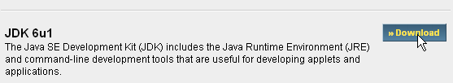

Lancer l'installation du JDK à partir du fichier téléchargé. Par défaut, Java est installé dans [C:\Program Files\Java] :

5.2. Eclipse
5.2.1. Installation de base
Eclipse est un IDE Jdisponible à l'url [http://www.eclipse.org/] et peut être téléchargé à l'url [http://www.eclipse.org/downloads/]. Nous téléchargeons ci-dessous Eclipse 3.2.2 :
Une fois le zip téléchargé, on le décompresse dans un dossier du disque :

Nous appellerons par la suite <eclipse>, le dossier d'installation d'Eclipse, ci-dessus [C:\devjava\eclipse 3.2.2\eclipse]. [eclipse.exe] est l'exécutable et [eclipse.ini] le fichier de configuration de celui-ci. Regardons le contenu de celui-ci :
Ces arguments sont utilisés lors du lancement d'Eclipse de la façon suivante :
On arrive au même résultat que celui obtenu avec le fichier .ini, en créant un raccourci qui lancerait Eclipse avec ces mêmes arguments. Explicitons ceux-ci :
- -vmargs : indique que les arguments qui suivent sont destinés à la machine virtuelle Java qui va exécuter Eclipse. Eclipse est une application Java.
- -Xms40m : ?
- -Xmx256m : fixe la taille mémoire en Mo allouée à la machine virtuelle Java (JVM) qui exécute Eclipse. Par défaut, cette taille est de 256 Mo comme montré ici. Si la machine le permet, 512 Mo est préférable.
Ces arguments sont passés à la JVM qui va exécuter Eclipse. La JVM est représentée par un fichier [java.exe] ou [javaw.exe]. Comment celui-ci est-il trouvé ? En fait, il est cherché de différentes façons :
- dans le PATH de l'OS
- dans le dossier <JAVA_HOME>/jre/bin où JAVA_HOME est une variable système définissant le dossier racine d'un JDK.
- à un emplacement passé en argument à Eclipse sous la forme -vm <chemin>\javaw.exe
Cette dernière solution est préférable car les deux autres sont sujettes aux aléas d'installations ultérieures d'applications qui peuvent soit changer le PATH de l'OS, soit changer la variable JAVA_HOME.
Nous créons donc le raccourci suivant :

<eclipse>\eclipse.exe" -vm "C:\Program Files\Java\jre1.6.0_01\bin\javaw.exe" -vmargs -Xms40m -Xmx512m | |
dossier <eclipse> d'installation d'Eclipse |
Ceci fait, lançons Eclipse via ce raccourci. On obtient une première boîte de dialogue :

Un [workspace] est un espace de travail. Acceptons les valeurs par défaut proposées. Par défaut, les projets Eclipse créés le seront dans le dossier <workspace> spécifié dans cette boîte de dialogue. Il y a moyen de contourner ce comportement. C'est ce que nous ferons systématiquement. Aussi la réponse donnée à cette boîte de dialogue n'est-elle pas importante.
Passée cette étape, l'environnement de développement Eclipse est affiché :

Nous fermons la vue [Welcome] comme suggéré ci-dessus :

Avant de créer un projet Java, nous allons configurer Eclipse pour indiquer le JDK à utiliser pour compiler les projets Java. Pour cela, nous prenons l'option [Window / Preferences / Java / Installed JREs ] :

Normalement, le JRE (Java Runtime Environment) qui a été utilisé pour lancer Eclipse lui-même doit être présent dans la liste des JRE. Ce sera le seul normalement. Il est possible d'ajouter des JRE avec le bouton [Add]. Il faut alors désigner la racine du JRE. Le bouton [Search] va lui, lancer une recherche de JREs sur le disque. C'est un bon moyen de savoir où on en est dans les JREs qu'on installe puis qu'on oublie de désinstaller lorsqu'on passe à une version plus récente. Ci-dessus, le JRE coché est celui qui sera utilisé pour compiler et exécuter les projets Java. C'est celui qui a été installé au paragraphe 5.1 et qui a également servi à lancer Eclipse. Un double clic dessus donne accès à ses propriétés :

Maintenant, créons un projet Java [File / New / Project] :
 |  |
Choisir [Java Project], puis [Next] ->
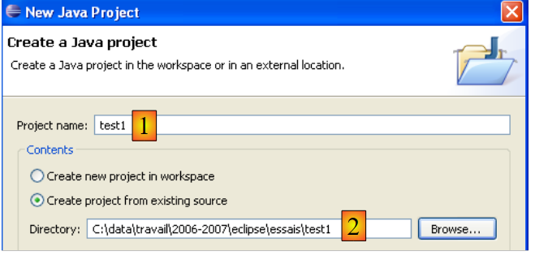
Dans [2], nous indiquons un dossier vide dans lequel sera installé le projet Java. Dans [1], nous donnons un nom au projet. Il n'a pas à porter le nom de son dossier comme pourrait le laisser croire l'exemple ci-dessus. Ceci fait, on utilise le bouton [Next] pour passer à la page suivante de l'assistant de création :

Ci-dessus, nous créons un dossier spécial dans le projet pour y stocker les fichiers source (.java) :

 |
- en [1], nous voyons le dossier [src] dans lequel seront rangés les sources .java
- en [2], nous voyons le dossier [bin] dans lequel seront rangés les fichiers compilés .class
Nous terminons l'assistant avec [Finish]. Nous avons alors un squelette de projet Java :

Cliquons droit sur le projet [test1] pour créer une classe Java :

 |
- dans [1], le dossier où sera créée la classe. Eclipse propose par défaut le dossier du projet courant.
- dans [2], le paquetage dans lequel sera placée la classe
- dans [3], le nom de la classe
- dans [4], nous demandons à ce que la méthode statique [main] soit générée
Nous validons l'assistant par [Finish]. Le projet est alors enrichi d'une classe :

Eclipse a généré le squelette de la classe. Celui-ci est obtenu en double-cliquant sur [Test1.java] ci-dessus :
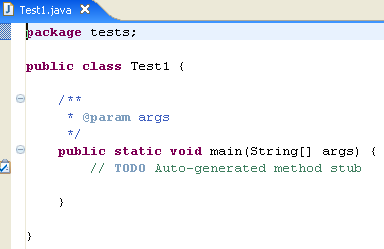
Nous modifions le code ci-dessus de la façon suivante :

Nous exécutons le programme [Test1.java] : [clic droit sur Test1.java -> Run As -> Java Application]

Le résultat de l'exécution est obtenu dans la fenêtre [Console] :

La fenêtre [Console] doit apparaître par défaut. Si ce n'était pas le cas, on peut demander son affichage par [Window/Show View/Console] :
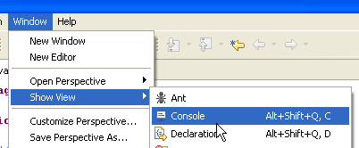
5.2.2. Choix du compilateur
Eclipse permet de générer du code compatible Java 1.4, Java 1.5, Java 1.6. Par défaut, il est configuré pour générer du code compatible Java 1.4. L'API JPA nécessite du code Java 1.5. Nous changeons la nature du code généré par [Window / Preferences / Java / Compiler] :
 |
- en [1] : choix de l'option [Java / Compiler]
- en [2] : choix de la compatibilité Java 5.0
5.2.3. Installation des plugins Callisto
La version de base installée ci-dessus permet de construire des application Java console mais pas des applications Java de type web ou Swing, ou alors il faut tout faire soi-même. Nous allons installer divers plugins :
Procédons ainsi [Help/Software Udates/Find and Install] :
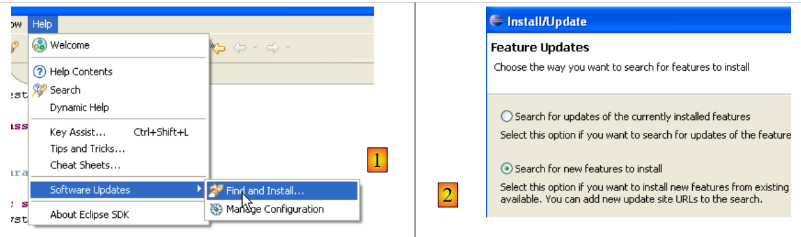 |
- en [2], on indique qu'on veut installer de nouveaux plugins
 |
- en [3], on indique les sites à explorer pour trouver les plugins
- en [4], on coche les plugins désirés
 |
- en [5], Eclipse signale qu'on a choisi un plugin qui dépend d'autres plugins qui n'ont pas été sélectionnés
- en [6], on utilise le bouton [Select Required] pour sélectionner automatiquement les plugins manquants
- en [7], on accepte les conditions des licences de ces divers plugins
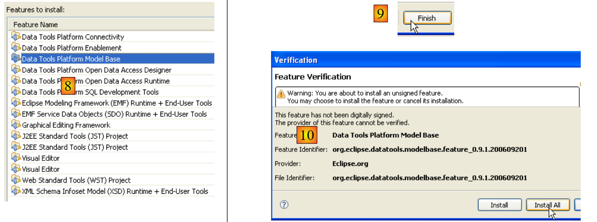 |
- en [8], on a la liste de tous les plugins qui vont être installés
- en [9], on lance le téléchargement de ces plugins
- en [10], une fois ceux-ci téléchargés, on les installe tous sans vérifier leur signature
 |
- en [11], à la fin de l'installation des plugins, on laisse Eclipse se relancer
- en [12], si on fait [File/New/Project], on découvre qu'on peut maintenant créer des applications web, ce qui n'était pas possible initialement.
5.2.4. Installation du plugin [TestNG]
TestNG (Test Next Generation) est un outil de tests unitaires semblable dans son esprit à JUnit. Il apporte cependant des améliorations qui nous le font préférer ici à JUnit. Nous procédons comme précédemment : [Help/Software Udates/Find and Install] :
 |
- en [2], on indique qu'on veut installer de nouveaux plugins
 |
- en [3a], le site de téléchargment de [TestNG] n'est pas présent. Nous l'ajoutons avec [3b]
- en [4b] : le site du plugin est [http://beust.com/eclipse]. En [4a], on met ce qu'on veut.
 |
- en [5a], le plugin [TestNG] est sélectionné pour la mise à jour. En [5b], on lance celle-ci.
- en [6], la connexion avec le site du plugin a été faite. Nous sont présentés tous les plugis disponibles sur le site. Un seul, ici, que nous sélectionnons avant de passer à l'étape suivante.
 |
- en [7], on accepte les conditions des licences du plugin
- en [8], on a la liste de tous les plugins qui vont être installés, un ici. On lance le téléchargement. Ensuite tout se déroule comme décrit ci-dessus, pour les plugins Callisto.
Une fois Eclipse relancé, on peut constater la présence du nouveau plugin en demandant, par exemple, à voir les vues disponibles [Window / show View / Other] :
 |
Nous voyons ci-dessus, l'existence d'une vue [TestNG] qui n'existait pas auparavant.
5.2.5. Installation du plugin [Hibernate Tools]
Hibernate est un fournisseur JPA et le plugin [Hibernate Tools] pour Eclipse est utile dans la construction d'applications JPA. En mai 2007, seule sa dernière version (3.2.0beta9) permet de travailler avec Hibernate/JPA et elle n'est pas disponible via le mécanisme qui vient d'être décrit. Seules des versions plus anciennes le sont. On va donc procéder différemment.
Le plugin est disponible sur le site d'Hibernate Tools : http://tools.hibernate.org/.
 |
- en [1], on sélectionne la dernière version d'Hibernate Tools
- en [2], on la télécharge
 |
- en [3], avec un dézippeur, on décompresse dans le dossier <eclipse> le fichier zip téléchargé (il est préférable qu'Eclipse ne soit pas actif)
- en [4], on accepte que certains fichiers soient écrasés dans l'opération
On relance Eclipse :
 |
- en [1] : on ouvre une perspective
- en [2] : il existe maintenant une perspective [Hibernate Console]
Nous n'irons pas plus loin avec le plugin [Hibernate Tools] (Cancel en [2]). Son mode d'utilisation est expliqué dans les exemples du tutoriel.
Parfois Eclipse ne détecte pas la présence de nouveaux plugins. On peut le forcer à rescanner tous ses plugins avec l'option -clean. Ainsi l'exécutable du raccourci d'Eclipse serait modifié de la façon suivante :
"<eclipse>\eclipse.exe" -clean -vm "C:\Program Files\Java\jre1.6.0_01\bin\javaw.exe" -vmargs -Xms40m -Xmx512m
Une fois les nouveaux plugins détectés par Eclipse, on enlèvera l'option -clean ci-dessus.
5.2.6. Installation du plugin [SQL Explorer]
Nous allons maintenant installer un plugin qui nous permettra d'explorer le contenu d'une base de données directement à partir d'Eclipse. Les plugins disponibles pour eclipse peuvent être trouvés sur le site [http://eclipse-plugins.2y.net/eclipse/plugins.jsp] :
 |
- en [1] : le site des plugins Eclipse
- en [2] : choisir la catégorie [Database]
- en [3] : dans la catégorie [Database], choisir un affichage par classement (peu fiable vu le faible nombre de gens qui votent)
- en [4] : QuantumDB arrive en 1ère position
- en [5] : nous choisissons SQLExplorer, plus ancien, moins bien côté (3ième) mais très bien quand même. Nous allons sur le site du plugin [plugin-homepage]
 |
- en [6] et [7] : on procède au téléchargement du plugin.
 |
- en [8] : décompresser le fichier zip du plugin dans le dossier d'Eclipse.
Pour vérifier, relancer Eclipse avec éventuellement l'option -clean :
 |
- en [1] : ouvrir une nouvelle perspective
- en [2] : on voit qu'une perspective [SQL Explorer] est disponible. Nous y reviendrons ultérieurement.
5.3. Le conteneur de servlets Tomcat 5.5
5.3.1. Installation
Pour exécuter des servlets, il nous faut un conteneur de servlets. Nous présentons ici l'un d'eux, Tomcat 5.5, disponible à l'url http://tomcat.apache.org/. Nous indiquons la démarche (mai 2007) pour l'installer. Si une précédente version de Tomcat est déjà installée, il est préférable de la supprimer auparavant.

Pour télécharger le produit, on suivra le lien [Tomcat 5.x] ci-dessus :

On pourra prendre le .exe destiné à la plate-forme windows. Une fois celui-ci téléchargé, on lance l'installation de Tomcat en double-cliquant dessus :

On accepte les conditions de la licence ->

Faire [next] ->

Accepter le dossier d'installation proposé ou le changer avec [Browse] ->

Fixer le login / mot de passe de l'administrateur du serveur Tomcat. Ici on a mis [admin / admin] ->
 |
Tomcat 5.x a besoin d'un JRE 1.5. Il doit normalement trouver celui qui est installé sur votre machine. Ci-dessus, le chemin désigné est celui du JRE 1.6 téléchargé au paragraphe 5.1. Si aucun JRE n'est trouvé, désignez sa racine en utilisant le bouton [1]. Ceci fait, utilisez le bouton [Install] pour installer Tomcat 5.x ->

Le bouton [Finish] termine l'installation. La présence de Tomcat est signalée par une icône à droite dans la barre des tâches de windows :
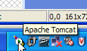
Un clic droit sur cette icône donne accès aux commandes Marche – Arrêt du serveur :

Nous utilisons l'option [Stop service] pour arrêter maintenant le serveur web :

On notera le changement d'état de l'icône. Cette dernière peut être enlevée de la barre des tâches :

L'installation de Tomcat s'est faite dans le dossier choisi par l'utilisateur, que nous appellerons désormais <tomcat>. L'arborescence de ce dossier pour la version Tomcat 5.5.23 téléchargée est la suivante :

L'installation de Tomcat a amené un certain nombre de raccourcis dans le menu [Démarrer]. Nous utilisons le lien [Monitor] ci-dessous pour lancer l'outil d'arrêt/démarrage de Tomcat :

Nous retrouvons alors l'icône présentée précédemment :
Le moniteur de Tomcat peut être activé par un double-clic sur cette icône :

Les boutons [Start - Stop - Pause] - Restart nous permettent de lancer - arrêter - relancer le serveur. Nous lançons le serveur par [Start] puis, avec un navigateur nous demandons l'url http://localhost:8080. Nous devons obtenir une page analogue à la suivante :
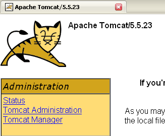
On pourra suivre les liens ci-dessous pour vérifier la correcte installation de Tomcat :

Tous les liens de la page [http://localhost:8080] présentent un intérêt et le lecteur est invité à les explorer. Nous aurons l'occasion de revenir sur les liens permettant de gérer les applications web déployées au sein du serveur :
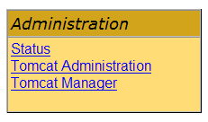
5.3.2. Déploiement d'une application web au sein du serveur Tomcat
5.3.3. Déploiement
Une application web doit suivre certaines règles pour être déployée au sein d'un conteneur de servlets. Soit <webapp> le dossier d'une application web. Une application web est composée de :
dans le dossier <webapp>\WEB-INF\classes | |
dans le dossier <webapp>\WEB-INF\lib | |
dans le dossier <webapp> ou des sous-dossiers |
L'application web est configurée par un fichier XML : <webapp>\WEB-INF\web.xml. Ce fichier n'est pas nécessaire dans les cas simples, notamment le cas où l'application web ne contient que des fichiers statiques. Construisons le fichier HTML suivant :
<html>
<head>
<title>Application exemple</title>
</head>
<body>
Application exemple active ....
</body>
</html>
et sauvegardons-le dans un dossier :

Si on charge ce fichier dans un navigateur, on obtient la page suivante :

L'URL affichée par le navigateur montre que la page n'a pas été délivrée par un serveur web mais directement chargée par le navigateur. Nous voulons maintenant qu'elle soit disponible via le serveur web Tomcat.
Revenons sur l'arborescence du répertoire <tomcat> :
La configuration des applications web déployées au sein du serveur Tomcat se fait à l'aide de fichiers XML placés dans le dossier [<tomcat>\conf\Catalina\localhost] :
 |  |
Ces fichiers XML peuvent être créés à la main car leur structure est simple. Plutôt que d'adopter cette démarche, nous allons utiliser les outils web que nous offre Tomcat.
5.3.4. Administration de Tomcat
Sur sa page d'entrée http://localhost:8080, le serveur nous offre des liens pour l'administrer :

Le lien [Tomcat Administration] nous offre la possibilité de configurer les ressources mises par Tomcat à la disposition des applications web déployées en son sein, par exemple un pool de connexions à une base de données. Suivons le lien :

La page obtenue nous indique que l'administration de Tomcat 5.x nécessite un paquetage particulier appelé " admin ". Retournons sur le site de Tomcat [http://tomcat.apache.org/download-55.cgi] :

Téléchargeons le zip libellé [Administration Web Application] puis décompressons-le. Son contenu est le suivant :

Le dossier [admin] doit être copié dans [<tomcat>\server\webapps] où <tomcat> est le dossier où a été installé tomcat 5.x :

Le dossier [localhost] contient un fichier [admin.xml] qui doit être copié dans [<tomcat>\conf\Catalina\localhost] :

Arrêtons puis relançons Tomcat s'il était actif. Puis avec un navigateur, redemandons la page d'entrée du serveur web :

Suivons le lien [Tomcat Administration]. Nous obtenons une page d'identification (pour l'obtenir, on peut être amené à faire un "reload/refresh" de la page) :
 |  |
Ici, il faut redonner les informations que nous avons données au cours de l'installation de Tomcat. Dans notre cas, nous donnons le couple admin / admin. Le bouton [Login] nous amène à la page suivante :

Cette page permet à l'administrateur de Tomcat de définir
- des sources de données (Data Sources),
- les informations nécessaires à l'envoi de courrier (Mail Sessions),
- des données d'environnement accessibles à toutes les applications (Environment Entries),
- de gérer les utilisateurs/administrateurs de Tomcat (Users),
- de gérer des groupes d'utilisateurs (Groups),
- de définir des rôles (= ce que peut faire ou non un utilisateur),
- de définir les caractéristiques des applications web déployées par le serveur (Service Catalina)
Suivons le lien [Roles] ci-dessus :
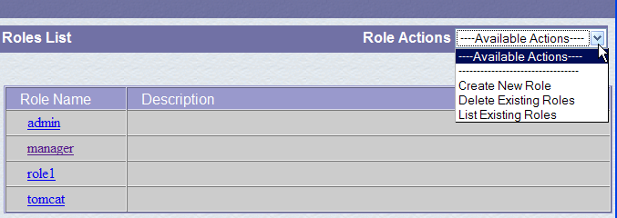
Un rôle permet de définir ce que peut faire ou ne pas faire un utilisateur ou un groupe d'utilisateurs. On associe à un rôle certains droits. Chaque utilisateur est associé à un ou plusieurs rôles et dispose des droits de ceux-ci. Le rôle [manager] ci-dessous donne le droit de gérer les applications web déployées dans Tomcat (déploiement, démarrage, arrêt, déchargement). Nous allons créer un utilisateur [manager] qu'on associera au rôle [manager] afin de lui permettre de gérer les applications de Tomcat. Pour cela, nous suivons le lien [Users] de la page d'administration :
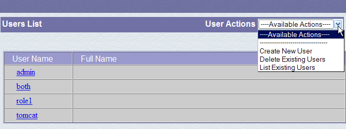
Nous voyons qu'un certain nombre d'utilisateurs existent déjà. Nous utilisons l'option [Create New User] pour créer un nouvel utilisateur :

Nous donnons à l'utilisateur manager le mot de passe manager et nous lui attribuons le rôle manager. Nous utilisons le bouton [Save] pour valider cet ajout. Le nouvel utilisateur apparaît dans la liste des utilisateurs :

Ce nouvel utilisateur va être ajouté dans le fichier [<tomcat>\conf\tomcat-users.xml] :

dont le contenu est le suivant :
<?xml version='1.0' encoding='utf-8'?>
<tomcat-users>
<role rolename="tomcat"/>
<role rolename="role1"/>
<role rolename="manager"/>
<role rolename="admin"/>
<user username="tomcat" password="tomcat" roles="tomcat"/>
<user username="role1" password="tomcat" roles="role1"/>
<user username="both" password="tomcat" roles="tomcat,role1"/>
<user username="manager" password="manager" fullName="" roles="manager"/>
<user username="admin" password="admin" roles="admin,manager"/>
</tomcat-users>
- ligne 10 : l'utilisateur [manager] qui a été créé
Une autre façon d'ajouter des utilisateurs est de modifier directement ce fichier. C'est notamment ainsi qu'il faut procéder si, d'aventure, on a oublié le mot de passe de l'administrateur admin ou de manager.
5.3.5. Gestion des applications web déployées
Revenons maintenant à la page d'entrée [http://localhost:8080] et suivons le lien [Tomcat Manager] :

Nous obtenons alors une page d'authentification. Nous nous identifions comme manager / manager, c.a.d. l'utilisateur de rôle [manager] que nous venons de créer. En effet, seul un utilisateur ayant ce rôle peut utiliser ce lien. Ligne 11 de [tomcat-users.xml], nous voyons que l'utilisateur [admin] a également le rôle [manager]. Nous pourrions donc utiliser également l'authentification [admin / admin].

Nous obtenons une page listant les applications actuellement déployées dans Tomcat :

Nous pouvons ajouter une nouvelle application grâce à des formulaires placés en bas de la page :
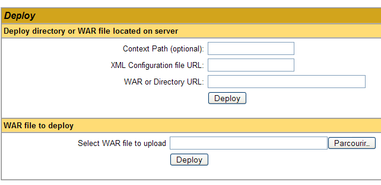
Ici, nous voulons déployer au sein de Tomcat, l'application exemple que nous avons construite précédemment. Nous le faisons de la façon suivante :

/exemple | le nom utilisé pour désigner l'application web à déployer | |
C:\data\travail\2006-2007\eclipse\dvp-jpa\annexes\tomcat\exemple | le dossier de l'application web |
Pour obtenir le fichier [C:\data\travail\2006-2007\eclipse\dvp-jpa\annexes\tomcat\exemple\exemple.html], nous demanderons à Tomcat l'URL [http://localhost:8080/exemple/exemple.html]. Le contexte sert à donner un nom à la racine de l'arborescence de l'application web déployée. Nous utilisons le bouton [Deploy] pour effectuer le déploiement de l'application. Si tout se passe bien, nous obtenons la page réponse suivante :

et la nouvelle application apparaît dans la liste des applications déployées :
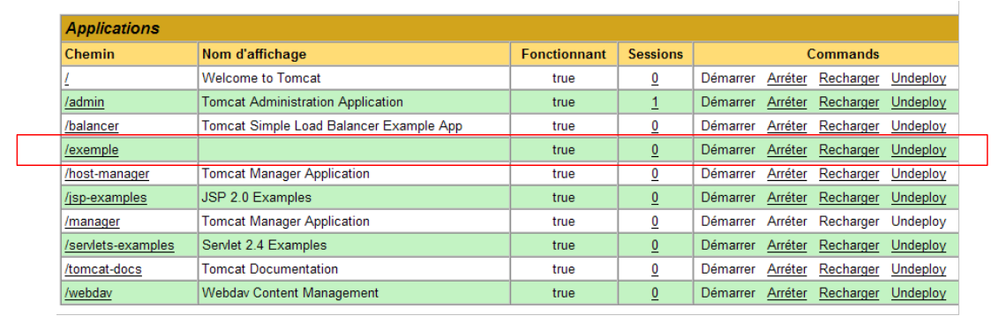 |
Commentons la ligne du contexte /exemple ci-dessus :
lien sur http://localhost:8080/exemple | |
permet de démarrer l'application | |
permet d'arrêter l'application | |
permet de recharger l'application. C'est nécessaire par exemple lorsqu'on a ajouté, modifié ou supprimé certaines classes de l'application. | |
suppression du contexte [/exemple]. L'application disparaît de la liste des applications disponibles. |
Maintenant que notre application /exemple est déployée, nous pouvons faire quelques tests. Nous demandons la page [exemple.html] via l'url [http://localhost:8080/exemple/vues/exemple.html] :

Une autre façon de déployer une application web au sein du serveur Tomcat est de donner les renseignements que nous avons donnés via l'interface web, dans un fichier [contexte].xml placé dans le dossier [<tomcat>\conf\Catalina\localhost], où [contexte] est le nom de l'application web.
Revenons à l'interface d'administration de Tomcat :

Supprimons l'application [/exemple] avec son lien [Undeploy] :
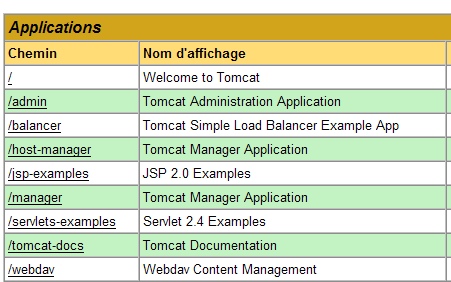
L'application [/exemple] ne fait plus partie de la liste des applications actives. Maintenant définissons le fichier [exemple.xml] suivant :
Le fichier XML est constitué d'une unique balise <Context> dont l'attribut docBase définit le dossier contenant l'application web à déployer. Plaçons ce fichier dans <tomcat>\conf\Catalina\localhost :

Arrêtons et relançons Tomcat si besoin est, puis visualisons la liste des applications actives avec l'administrateur de Tomcat :

L'application [/exemple] est bien présente. Demandons, avec un navigateur, l'url :
[http://localhost:8080/exemple/exemple.html] :

Une application web ainsi déployée peut être supprimée de la liste des applications déployées, de la même façon que précédemment, avec le lien [Undeploy] :
Dans ce cas, le fichier [exemple.xml] est automatiquement supprimé du dossier [<tomcat>\conf\Catalina\localhost].
Enfin, pour déployer une application web au sein de Tomcat, on peut également définir son contexte dans le fichier [<tomcat>\conf\server.xml]. Nous ne développerons pas ce point ici.
5.3.6. Application web avec page d'accueil
Lorsque nous demandons l'url [http://localhost:8080/exemple/], nous obtenons la réponse suivante :
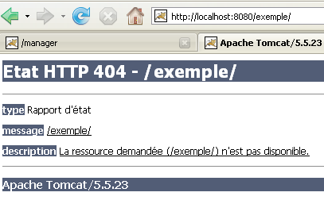
Avec certaines versions précédentes de Tomcat, nous aurions obtenu le contenu du dossier physique de l'application [/exemple].
On peut faire en sorte que, lorsque le contexte est demandé, on affiche une page dite d'accueil. Pour cela, nous créons un fichier [web.xml] que nous plaçons dans le dossier <exemple>\WEB-INF, où <exemple> est le dossier physique de l'application web [/exemple]. Ce fichier est le suivant :
- lignes 2-5 : la balise racine <web-app> avec des attributs obtenus par copier / coller du fichier [web.xml] de l'application [/admin] de Tomcat (<tomcat>/server/webapps/admin/WEB-INF/web.xml).
- ligne 7 : le nom d'affichage de l'application web. C'est un nom libre qui a moins de contraintes que le nom de contexte de l'application. On peut y mettre des espaces par exemple, ce qui n'est pas possible avec le nom de contexte. Ce nom est affiché par exemple par l'administrateur Tomcat :

- ligne 8 : description de l'application web. Ce texte peut ensuite être obtenu par programmation.
- lignes 9-11 : la liste des fichiers d'accueil. La balise <welcome-file-list> sert à définir la liste des vues à présenter lorsqu'un client demande le contexte de l'application. Il peut y avoir plusieurs vues. La première trouvée est présentée au client. Ici nous n'en avons qu'une : [/exemple.html]. Ainsi, lorsqu'un client demandera l'url [/exemple], ce sera en fait l'url [/exemple/exemple.html] qui lui sera délivrée.
Sauvegardons ce fichier [web.xml] dans <exemple>\WEB-INF :

Si Tomcat est toujours actif, il est possible de le forcer à recharger l'application web [/exemple] avec le lien [Recharger] :

Lors de cette opération de " rechargement ", Tomcat relit le fichier [web.xml] contenu dans [<exemple>\WEB-INF] s'il existe. Ce sera le cas ici. Si Tomcat était arrêté, le relancer.
Avec un navigateur, demandons l'URL [http://localhost:8080/exemple/] :
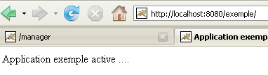
Le mécanisme des fichiers d'accueil a fonctionné.
5.3.7. Intégration de Tomcat dans Eclipse
Nous allons maintenant intégrer Tomcat dans Eclipse. Cette intégration permet de :
- lancer / arrêter Tomcat à partir d'Eclipse
- développer des applications web Java et les exécuter sur Tomcat. L'intégration Eclipse / Tomcat permet de tracer (déboguer) l'exécution de l'application, y compris l'exécution des classes Java (servlets) exécutées par Tomcat.
Lançons Eclipse, puis demandons à voir la vue [Servers] :
 |
- en [1] : Window/Show View/Other
- en [2] : sélectionner la vue [Servers] et faire [OK]
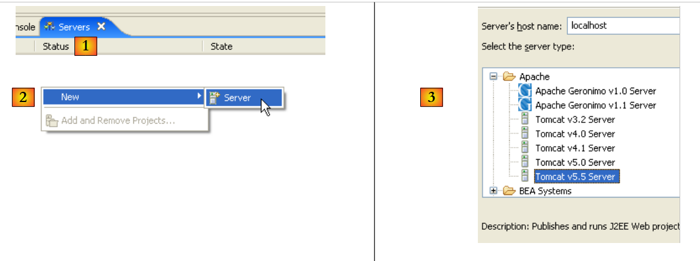 |
- en [1], on a une nouvelle vue [Servers]
- en [2], on clique droit sur la vue et on demande à créer un nouveau serveur [New/Server]
- en [3], on choisit le serveur [Tomcat 5.5] puis on fait [Next]
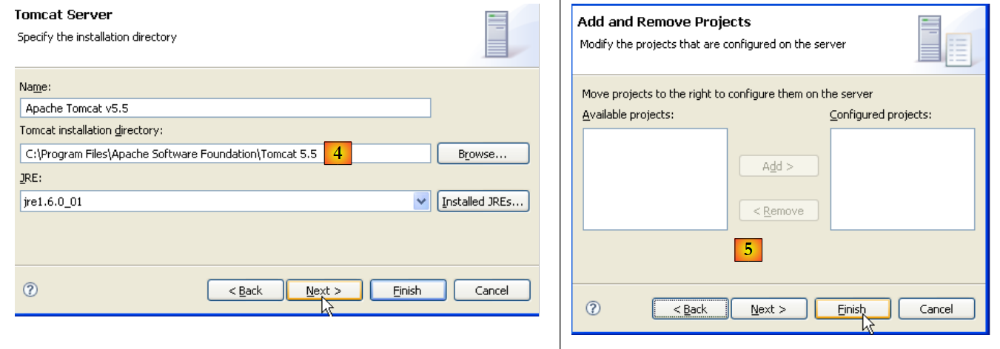 |
- en [4], on désigne le dossier d'installation de Tomcat 5.5
- en [5], on indique qu'il n'y a pas de projets Eclipse/Tomcat pour le moment. on fait [Finish]
L'ajout du serveur se concrétise par celui d'un dossier dans l'explorateur de projets d'Eclipse [6] et l'apparition d'un serveur dans la vue [servers] [7] :
 |
Dans la vue [Servers] apparaissent tous les serveurs déclarés, ici uniquement le serveur Tomcat 5.5 que nous venons d'enregistrer. Un clic droit dessus donne accès aux commandes permettant de démarrer – arrêter – relancer le serveur :
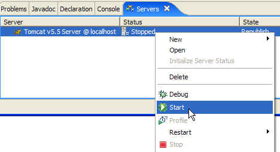
Ci-dessus, nous lançons le serveur. Lors de son démarrage, un certain nombre de logs sont écrits dans la vue [Console] :
La compréhension de ces logs demande une certaine habitude. Nous ne nous apesantirons pas dessus pour le moment. Il est cependant important de vérifier qu'ils ne signalent pas d'erreurs de chargement de contextes. En effet, lorsqu'il est lancé, le serveur Tomcat / Eclipse va chercher à charger le contexte des applications qu'il gère. Charger le contexte d'une application implique d'exploiter son fichier [web.xml] et de charger une ou plusieurs classes l'initialisant. Plusieurs types d'erreurs peuvent alors se produire :
- le fichier [web.xml] est syntaxiquement incorrect. C'est l'erreur la plus fréquente. Il est conseillé d'utiliser un outil capable de vérifier la validité d'un document XML lors de sa construction.
- certaines classes à charger n'ont pas été trouvées. Elles sont cherchées dans [WEB-INF/classes] et [WEB-INF/lib]. Il faut en général vérifier la présence des classes nécessaires et l'orthographe de celles déclarées dans le fichier [web.xml].
Le serveur lancé à partir d'Eclipse n'a pas la même configuration que celui installé au paragraphe 5.3. Pour nous en assurer, demandons l'url [http://localhost:8080] avec un navigateur :

Cette réponse n'indique pas que le serveur ne fonctionne pas mais que la ressource / qui lui est demandée n'est pas disponible. Avec le serveur Tomcat intégré à Eclipse, ces ressources vont être des projets web. Nous le verrons ultérieurement. Pour le moment, arrêtons Tomcat :
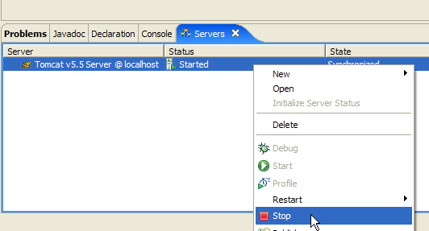
Le mode de fonctionnement précédent peut être changé. Revenons dans la vue [Servers] et double-cliquons sur le serveur Tomcat pour avoir accès à ses propriétés :
 |  |
La case à cocher [1] est responsable du fonctionnement précédent. Lorsqu'elle est cochée, les applications web développées sous Eclipse ne sont pas déclarées dans les fichiers de configuration du serveur Tomcat associé mais dans des fichiers de configuration séparés. Ce faisant, on ne dispose pas des applications définies par défaut au sein du serveur Tomcat : [admin] et [manager] qui sont deux applications utiles. Aussi, allons-nous décocher [1] et relancer Tomcat :
 |  |
Ceci fait, demandons l'url [http://localhost:8080] avec un navigateur :

Nous retrouvons le fonctionnement décrit au paragraphe 5.3.4.
Nous avons, dans nos exemples précédents, utilisé un navigateur extérieur à Eclipse. On peut également utiliser un navigateur interne à Eclipse :

Nous sélectionnons ci-dessus, le navigateur interne. Pour le lancer à partir d'Eclipse on peut utiliser l'icône suivante :

Le navigateur réellement lancé sera celui sélectionné par l'option [Window -> Web Browser]. Ici, nous obtenons le navigateur interne :

Lançons si besoin est Tomcat à partir d'Eclipse et demandons dans [1] l'url [http://localhost:8080] :

Suivons le lien [Tomcat Manager] :

Le couple [login / mot de passe] nécessaire pour accéder à l'application [manager] est demandé. D'après la configuration de Tomcat que nous avons faite précédemment, on peut saisir [admin / admin] ou [manager / manager]. On obtient alors la liste des applications déployées :

5.4. Le SGBD Firebird
5.4.1. SGBD Firebird
Le SGBD Firebird est disponible à l'url [http://www.firebirdsql.org/] :
 |
- en [1] : on utilise l'option [Download.Firebird Relational Database]
- en [2] : on désigne la version de Firebird désirée
- en [3] : on télécharge le binaire de l'installation
Une fois le fichier [3] téléchargé, on double-clique dessus pour installer le SGBD Firebird. Le SGBD est installé dans un dossier dont le contenu est analogue au suivant :

Les binaires sont dans le dossier [bin] :

permet de lancer/arrêter le SGBD | |
client ligne permettant de gérer des bases de données |
On notera que par défaut, l'administrateur du SGBD s'appelle [SYSDBA] et son mot de passe est [masterkey]. Des menus ont été installés dans [Démarrer] :

L'option [Firebird Guardian] permet de lancer/arrêter le SGBD. Après le lancement, l'icône du SGBD reste dans la barre des tâches de windows :
 |
Pour créer et exploiter des bases de données Firebird avec le client ligne [isql.exe], il est nécessaire de lire la documentation livrée avec le produit et qui est accessible via des raccourcis de Firebird dans [Démarrer/Programmes/Firebird 2.0].
Une façon rapide de travailler avec Firebird et d'apprendre le langage SQL est d'utiliser un client graphique. Un tel client est IB-Expert décrit au paragraphe suivant.
5.4.2. Travailler avec le SGBD Firebird avec IB-Expert
Le site principal de IB-Expert est [http://www.ibexpert.com/].
 |
 |
- en [1], on sélectionne IBExpert
- en [2], on sélectionne le téléchargement après avoir éventuellement choisi la langue de son choix
- en [3], on sélectionne la version dite "personnelle" car elle est gratuite. Il faut néanmoins s'inscrire auprès du site.
- en [4], on télécharge IBExpert
IBExpert est installé dans un dossier analogue au suivant :

L'exécutable est [ibexpert.exe]. Un raccourci est normalement disponible dans le menu [Démarrer] :
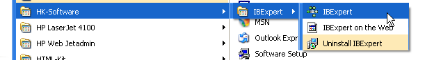
Une fois lancé, IBExpert affiche la fenêtre suivante :

Utilisons l'option [Database/Create Database] pour créer une base de données :

peut être [local] ou [remote]. Ici notre serveur est sur la même machine que [IBExpert]. On choisit donc [local] | |
utiliser le bouton de type [dossier] du combo pour désigner le fichier de la base. Firebird met toute la base dans un unique fichier. C'est l'un de ses atouts. On transporte la base d'un poste à l'autre par simple copie du fichier. Le suffixe [.fdb] est ajouté automatiquement. | |
SYSDBA est l'administrateur par défaut des distributions actuelles de Firebird | |
masterkey est le mot de passe de l'administrateur SYSDBA des distributions actuelles de Firebird | |
le dialecte SQL à utiliser | |
si la case est cochée, IBExpert présentera un lien vers la base créée après avoir créé celle-ci |
Si en cliquant le bouton [OK] de création, vous obtenez l'avertissement suivant :

c'est que vous n'avez pas lancé Firebird. Lancez-le. On obtient une nouvelle fenêtre :

Famille de caractères à utiliser. Il est conseillé de prendre dans la liste déroulante la famille [ISO-8859-1] qui permet d'utiliser les caractères latins accentués. |
[IBExpert] est capable de gérer différents SGBD dérivés d'Interbase. Prendre la version de Firebird que vous avez installée. |
Une fois cette nouvelle fenêtre validée par [Register], on a le résultat [1] dans la fenêtre [Database Explorer]. Cette fenêtre peut être fermée malencontreusement. Pour l'obtenir de nouveau faire [2] :
 |
Pour avoir accès à la base créée, il suffit de double-cliquer sur son lien. IBExpert expose alors une arborescence donnant accès aux propriétés de la base :

5.4.3. Création d'une table de données
Créons une table. On clique droit sur [Tables] (cf fenêtre ci-dessus) et on prend l'option [New Table]. On obtient la fenêtre de définition des propriétés de la table :
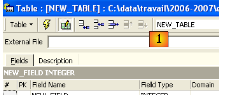 |
Commençons par donner le nom [ARTICLES] à la table en utilisant la zone de saisie [1] :
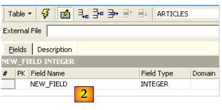
Utilisons la zone de saisie [2] pour définir une clé primaire [ID] :

Un champ est fait clé primaire par un double-clic sur la zone [PK] (Primary Key) du champ. Ajoutons des champs avec le bouton situé au-dessus de [3] :

Tant qu'on n'a pas " compilé " notre définition, la table n'est pas créée. Utilisons le bouton [Compile] ci-dessus pour terminer la définition de la table. IBExpert prépare les requêtes SQL de génération de la table et demande confirmation :

De façon intéressante, IBExpert affiche les requêtes SQL qu'il a exécutées. Cela permet un apprentissage à la fois du langage SQL mais également du dialecte SQL éventuellement propriétaire utilisé. Le bouton [Commit] permet de valider la transaction en cours, [Rollback] de l'annuler. Ici on l'accepte par [Commit]. Ceci fait, IBExpert ajoute la table créée, à l'arborescence de notre base de données :

En double-cliquant sur la table, on a accès à ses propriétés :

Le panneau [Constraints] nous permet d'ajouter de nouvelles contraintes d'intégrité à la table. Ouvrons-le :

On retrouve la contrainte de clé primaire que nous avons créée. On peut ajouter d'autres contraintes :
- des clés étrangères [Foreign Keys]
- des contraintes d'intégrité de champs [Checks]
- des contraintes d'unicité de champs [Uniques]
Indiquons que :
- les champs [ID, PRIX, STOCKACTUEL, STOKMINIMUM] doivent être >0
- le champ [NOM] doit être non vide et unique
Ouvrons le panneau [Checks] et cliquons droit dans son espace de définition des contraintes pour ajouter une nouvelle contrainte :

Définissons les contraintes souhaitées :
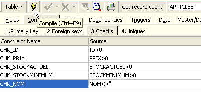
On notera ci-dessus, que la contrainte [NOM<>''] utilise deux apostrophes et non des guillemets. Compilons ces contraintes avec le bouton [Compile] ci-dessus :

Là encore, IBExpert fait preuve de pédagogie en indiquant les requêtes SQL qu'il a exécutées. Passons maintenant au panneau [Constraints/Uniques] pour indiquer que le nom doit être unique. Cela signifie qu'on ne peut pas avoir deux fois le même nom dans la table.

Définissons la contrainte :

Puis compilons-la. Ceci fait, ouvrons le panneau [DDL] (Data Definition Language) de la table [ARTICLES] :

Celui-ci donne le code SQL de génération de la table avec toutes ses contraintes. On peut sauvegarder ce code dans un script afin de le rejouer ultérieurement :
SET SQL DIALECT 3;
SET NAMES ISO8859_1;
CREATE TABLE ARTICLES (
ID INTEGER NOT NULL,
NOM VARCHAR(20) NOT NULL,
PRIX DOUBLE PRECISION NOT NULL,
STOCKACTUEL INTEGER NOT NULL,
STOCKMINIMUM INTEGER NOT NULL
);
ALTER TABLE ARTICLES ADD CONSTRAINT CHK_ID check (ID>0);
ALTER TABLE ARTICLES ADD CONSTRAINT CHK_PRIX check (PRIX>0);
ALTER TABLE ARTICLES ADD CONSTRAINT CHK_STOCKACTUEL check (STOCKACTUEL>0);
ALTER TABLE ARTICLES ADD CONSTRAINT CHK_STOCKMINIMUM check (STOCKMINIMUM>0);
ALTER TABLE ARTICLES ADD CONSTRAINT CHK_NOM check (NOM<>'');
ALTER TABLE ARTICLES ADD CONSTRAINT UNQ_NOM UNIQUE (NOM);
ALTER TABLE ARTICLES ADD CONSTRAINT PK_ARTICLES PRIMARY KEY (ID);
5.4.4. Insertion de données dans une table
Il est maintenant temps de mettre des données dans la table [ARTICLES]. Pour cela, utilisons son panneau [Data] :

Les données sont entrées par un double-clic sur les champs de saisie de chaque ligne de la table. Une nouvelle ligne est ajoutée avec le bouton [+], une ligne supprimée avec le bouton [-]. Ces opérations se font dans une transaction qui est validée par le bouton [Commit Transaction] (cf ci-dessus). Sans cette validation, les données seront perdues.
5.4.5. L'éditeur SQL de [IB-Expert]
Le langage SQL (Structured Query Language) permet à un utilisateur de :
- créer des tables en précisant le type de données qu'elle va stocker, les contraintes que ces données doivent vérifier
- d'y insérer des données
- d'en modifier certaines
- d'en supprimer d'autres
- d'en exploiter le contenu pour obtenir des informations
- ...
IBExpert permet à un utilisateur de faire les opérations 1 à 4 de façon graphique. Nous venons de le voir. Lorsque la base contient de nombreuses tables avec chacune des centaines de lignes, on a besoin de renseignements difficiles à obtenir visuellement. Supposons par exemple qu'un magasin virtuel sur le web ait des milliers d'acheteurs par mois. Tous les achats sont enregistrés dans une base de données. Au bout de six mois, on découvre qu'un produit « X » est défaillant. On souhaite contacter toutes les personnes qui l'ont acheté afin qu'elles renvoient le produit pour un échange gratuit. Comment trouver les adresses de ces acheteurs ?
- On peut consulter visuellement toutes les tables et chercher ces acheteurs. Cela prendra quelques heures.
- On peut émettre un ordre SQL qui va donner la liste de ces personnes en quelques secondes
Le langage SQL est utile dès
- que la quantité de données dans les tables est importante
- qu'il y a beaucoup de tables liées entre-elles
- que l'information à obtenir est répartie sur plusieurs tables
- ...
Nous présentons maintenant l'éditeur SQL d'IBExpert. Celui-ci est accesible via l'option [Tools/SQL Editor] ou [F12] :

On a alors accès à un éditeur de requêtes SQL évolué avec lequel on peut jouer des requêtes. Tapons une requête :

On exécute la requête SQL avec le bouton [Execute] ci-dessus. On obtient le résultat suivant :

Ci-dessus, l'onglet [Results] présente la table résultat de l'ordre SQL [Select]. Pour émettre une nouvelle commande SQL, il suffit de revenir sur l'onglet [Edit]. On retrouve alors l'ordre SQL qui a été joué.
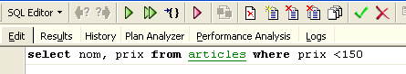
Plusieurs boutons de la barre d'outils sont utiles :
- le bouton [New Query] permet de passer à une nouvelle requête SQL :

On obtient alors une page d'édition vierge :

On peut alors saisir un nouvel ordre SQL :

et l'exécuter :

Revenons sur l'onglet [Edit]. Les différents ordres SQL émis sont mémorisés par [IBExpert]. Le bouton [Previous Query] permet de revenir à un ordre SQL émis antérieurement :

On revient alors à la requête précédente :

Le bouton [Next Query] permet lui d'aller à l'ordre SQL suivant :

On retrouve alors l'ordre SQL qui suit dans la liste des ordres SQL mémorisés :

Le bouton [Delete Query] permet de supprimer un ordre SQL de la liste des ordres mémorisés :

Le bouton [Clear Current Query] permet d'effacer le contenu de l'éditeur pour l'ordre SQL affiché :

Le bouton [Commit] permet de valider définitivement les modifications faites à la base de données :
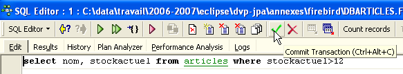
Le bouton [RollBack] permet d'annuler les modifications faites sur la base depuis le dernier [Commit]. Si aucun [Commit] n'a été fait depuis la connexion à la base, alors ce sont les modifications faites depuis cette connexion qui sont annulées.

Prenons un exemple. Insérons une nouvelle ligne dans la table :

L'ordre SQL est exécuté mais aucun affichage ne se produit. On ne sait pas si l'insertion a eu lieu. Pour le savoir, exécutons l'ordre SQL suivant [New Query] :

On obtient [Execute] le résultat suivant :

La ligne a donc bien été insérée. Examinons le contenu de la table d'une autre façon maintenant. Double-cliquons sur la table [ARTICLES] dans l'explorateur de bases :
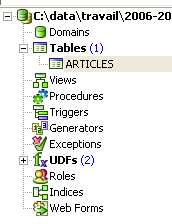
On obtient la table suivante :

Le bouton fléché ci-dessus permet de rafraîchir la table. Après rafraîchissement, la table ci-dessus ne change pas. On a l'impression que la nouvelle ligne n'a pas été insérée. Revenons à l'éditeur SQL (F12) puis validons l'ordre SQL émis avec le bouton [Commit] :
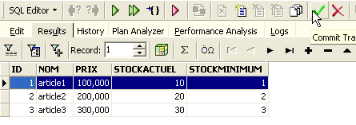
Ceci fait, revenons sur la table [ARTICLES]. Nous pouvons constater que rien n'a changé même en utilisant le bouton [Refresh] :

Ci-dessus, ouvrons l'onglet [Fields] puis revenons sur l'onglet [Data]. Cette fois-ci la ligne insérée apparaît correctement :

Quand commence l'émission des différents ordres SQL, l'éditeur ouvre ce qu'on appelle une transaction sur la base. Les modifications faites par ces ordres SQL de l'éditeur SQL ne seront visibles que tant qu'on reste dans le même éditeur SQL (on peut en ouvrir plusieurs). Tout se passe comme si l'éditeur SQL travaillait non pas sur la base réelle mais sur une copie qui lui est propre. Dans la réalité, ce n'est pas exactement de cette façon que cela se passe mais cette image peut nous aider à comprendre la notion de transaction. Toutes les modifications apportées à la copie au cours d'une transaction ne seront visibles dans la base réelle que lorsqu'elles auront été validées par un [Commit Transaction]. La transaction courante est alors terminée et une nouvelle transaction commence.
Les modifications apportées au cours d'une transaction peuvent être annulées par une opération appelée [Rollback]. Faisons l'expérience suivante. Commençons une nouvelle transaction (il suffit de faire [Commit] sur la transaction courante) avec l'ordre SQL suivant :

Exécutons cet ordre qui supprime toutes les lignes de la table [ARTICLES], puis exécutons [New Query] le nouvel ordre SQL suivant :

Nous obtenons le résultat suivant :

Toutes les lignes ont été détruites. Rappelons-nous que cela a été fait sur une copie de la table [ARTICLES]. Pour le vérifier, double-cliquons sur la table [ARTICLES] ci-dessous :

et visualisons l'onglet [Data] :

Même en utilisant le bouton [Refresh] ou en passant à l'onglet [Fields] pour revenir ensuite à l'onglet [Data], le contenu ci-dessus ne bouge pas. Ceci a été expliqué. Nous sommes dans une autre transaction qui travaille sur sa propre copie. Maintenant revenons à l'éditeur SQL (F12) et utilisons le bouton [RollBack] pour annuler les suppressions de lignes qui ont été faites :

Confirmation nous est demandée :

Confirmons. L'éditeur SQL confirme que les modifications ont été annulées :

Rejouons la requête SQL ci-dessus pour vérifier. On retrouve les lignes qui avaient été supprimées :

L'opération [Rollback] a ramené la copie sur laquelle travaille l'éditeur SQL, dans l'état où elle était au début de la transaction.
5.4.6. Exportation d'une base Firebird vers un script SQL
Lorsqu'on travaille avec divers SGBD, comme c'est le cas dans le tutoriel " Persistance Java 5 par la pratique ", il est intéressant de pouvoir exporter une base à partir d'un SGBD 1 vers un script SQL pour importer ensuite ce dernier dans un SGBD 2. Cela évite un certain nombre d'opérations manuelles. Ce n'est cependant pas toujours possible, les SGBD ayant souvent des extensions SQL propriétaires.
Montrons comment exporter la base [dbarticles] précédente vers un script SQL :
 |
- en [1] : Outils / Extraire la MetaData, pour extraire les méta-données
- en [2] : onglet Méta Objets
- en [3] : sélectionner la table [Articles] dont on veut extraire la structure (méta-données)
- en [4] : pour transférer à droite l'objet sélectionné à gauche
 |
- en [5] : la table [ARTICLES] fera partie des méta-données extraites
- en [6] : l'onglet [Table de données] sert à sélectionner les tables dont on veut extraire le contenu (dans l'étape précédente, c'était la structure de la table qui était exportée)
- en [7] : pour transférer à droite l'objet sélectionné à gauche
- en [8] : le résultat obtenu
 |
- en [9] : l'onglet [Options] permet de configurer certains paramètres de l'extraction
- en [10] : on décoche les options liées à la génération des ordres SQL permettant se connecter à la base. Ils sont propriétaires à Firebird et de ce fait ne nous intéressent pas.
- en [11] : l'onglet [Sortie] permet de préciser où sera généré le script SQL
- en [12] : on précise que le script doit être généré dans un fichier
- en [13] : on précise l'emplacement de ce fichier
- en [14] : on lance la génération du script SQL
Le script généré, débarrassé de ses commentaires est le suivant :
Note : les lignes 1-2 sont propres à Firebird. Elles doivent être supprimées du script généré afin d'avoir du SQL générique.
5.4.7. Pilote JDBC de Firebird
Un programme Java accède aux données d'une base de données via un pilote JDBC propre au SGBD utilisé :
 |
Dans une architecture multi-couches comme celle ci-dessus, le pilote JDBC [1] est utilisée par la couche [dao] (Data Access Object) pour accéder aux données d'une base de données.
Le pilote JDBC de Firebird est disponible à l'url où Firebird a été téléchargé :
 |
 |
- en [1] : on choisit de télécharger le pilote JDBC
- en [2] : on choisit un pilote JDBC compatible JDK 1.5
- en [3] : l'archive contenant le pilote JDBC est [jaybird-full-2.1.1.jar]. On extraiera ce fichier. Il sera utilisé pour tous les exemples JPA avec Firebird.
Nous le plaçons dans un dossier que nous appellerons par la suite <jdbc> :

Pour vérifier ce pilote JDBC, nous allons utiliser Eclipse et le plugin SQL Explorer (paragraphe 5.2.6). Nous commençons par déclarer le pilote JDBC de Firebird :
 |
- en [1] : faire Window / Preferences
- en [2] : choisir l'option SQL Explorer / JDBC Drivers
- en [3] : choisir le pilote JDBC pour Firebird
- en [4] : passer en phase de configuration
- en [5] : passer dans l'onglet [Extra Class Path]
- avec [6], désigner le fichier du pilote JDBC. Ceci fait, celui-ci apparaît en [7]. On choisira ici le pilote placé précédemment dans le dossier <jdbc>
- dans [8] : le nom de la classe Java du pilote JDBC. Il peut être obtenu par le bouton [8b].
- on fait [OK] pour valider la configuration
 |
- en [9] : le pilote JDBC de Firebird est désormais configuré. On peut passer à son utilisation.
 |
- en [1] : ouvrir une nouvelle perspective
- en [2] : choisir la perspective [SQL Explorer]
 |
- en [3] : créer une nouvelle connexion
- en [4] : lui donner un nom
- en [5] : choisir dans la liste déroulante le pilote JDBC de Firebird
- en [6] : préciser l'Url de la base à laquelle on veut se connecter, ici : [jdbc:firebirdsql:localhost/3050:C:\data\2006-2007\eclipse\dvp-jpa\annexes\jpa\jpa.fdb]. [jpa.fdb] est la base créée précédemment avec IBExpert.
- en [7] : le nom de l'utilisateur de la connexion, ici [sysdba], l'administrateur de Firebird
- en [8] : son mot de passe [masterkey]
- on valide la configuration de la connexion par [OK]
 |
- en [1] : on double-clique sur le nom de la connexion qu'on veut ouvrir
- en [2] : on s'identifie (sysdba, masterkey)
- en [3] : la connexion est ouverte
- en [4] : on a la structure de la base. On y voit la table [ARTICLES]. On la sélectionne.
 |
- en [5] : dans la fenêtre [Database Detail], on a les détails de l'objet sélectionné en [4], ici la table [ARTICLES]
- en [6] : l'onglet [Columns] donne la structure de la table
- en [7] : l'onglet [Preview] donne la structure de la table
On peut émettre des requêtes SQL dans la fenêtre [SQL Editor] :
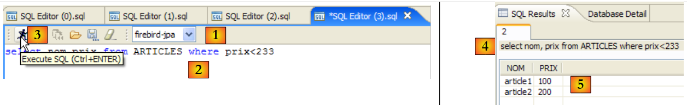 |
- en [1] : choisir une connexion ouverte
- en [2] : taper l'ordre SQL à exécuter
- en [3] : l'exécuter
- en [4] : rappel de l'ordre exécuté
- en [5] : son résultat
5.5. Le SGBD MySQL5
5.5.1. Installation
Le SGBD MySQL5 est disponible à l'url [http://dev.mysql.com/downloads/] :
 |
- en [1] : choisir la version désirée
- en [2] : choisir une version Windows
 |
- en [3] : choisir la version windows désirée
- en [4] : le zip téléchargé contient un exécutable [Setup.exe] [4b] qu'il faut extraire et exécuter pour installer MySQL5
 |
- en [5] : choisir une installation typique
- en [6] : une fois l'installation terminée, on peut configurer le serveur MySQL5
 |
- en [7] : choisir une configuration standard, celle qui pose le moins de questions
- en [8] : le serveur MySQL5 sera un service windows
 |
- en [9] : par défaut l'administrateur du serveur est root sans mot de passe. On peut garder cette configuration ou donner un nouveau mot de passe à root. Si l'installation de MySQL5 vient derrière une désinstallation d'une version précédente, cette opération peut échouer. Il y a moins moyen d'y revenir.
- en [10] : on demande la configuration du serveur
L'installation de MySQL5 donne naissance à un dossier dans [Démarrer / Programmes ] :

On peut utiliser [MySQL Server Instance Config Wizard] pour reconfigurer le serveur :
 |
 |
 |
- en [3] : nous changeons le mot de passe de root (ici root/root)
5.5.2. Lancer / Arrêter MySQL5
Le serveur MySQL5 a été installé comme un service windows à démarrage automatique, c.a.d lancé dès le démarrage de windows. Ce mode de fonctionnement est peu pratique. Nous allons le changer :
[Démarrer / Panneau de configuration / Performances et maintenance / Outils d'administration / Services ] :
 |
- en [1] : nous double-cliquons sur [Services]
- en [2] : on voit qu'un service appelé [MySQL] est présent, qu'il est démarré [3] et que son démarrage est automatique [4].
Pour modifier ce fonctionnement, nous double-cliquons sur le service [MySQL] :
 |
- en [1] : on met le service en démarrage manuel
- en [2] : on l'arrête
- en [3] : on valide la nouvelle configuration du service
Pour lancer et arrêter manuellement le service MySQL, on pourra créer deux raccourcis :
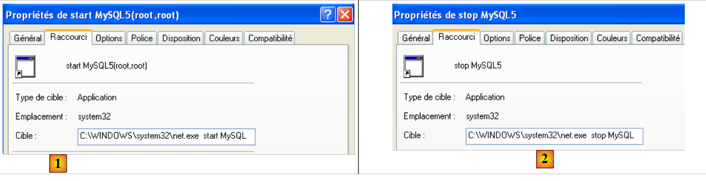 |
- en [1] : le raccourci pour lancer MySQL5
- en [2] : le raccourci pour l'arrêter
5.5.3. Clients d'administration MySQL
Sur le site de MySQL, on peut trouver des clients d'administration du SGBD :
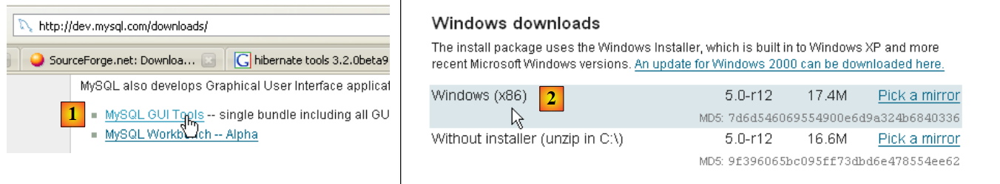 |
- en [1] : choisir [MySQL GUI Tools] qui rassemble divers clients graphiques permettant soit d'administrer le SGBD, soit de l'exploiter
- en [2] : prendre la version Windows qui convient
 |
- en [3] : on récupère un fichier .msi à exécuter
- en [4] : une fois l'installation faite, de nouveaux raccourcis apparaissent dans le dossier [Menu Démarrer / Programmes / mySQL].
Lançons MySQL (via les raccourcis que vous avez créés), puis lançons [MySQL Administrator] via le menu ci-dessus :
 |
- en [1] : mettre le mot de passe de l'utilisateur root (root ici)
- en [2] : on est connecté et on voit que MySQL est actif
5.5.4. Création d'un utilisateur jpa et d'une base de données jpa
Le tutoriel utilise MySQL5 avec une base de données appelée jpa et un utilisateur de même nom. Nous les créons maintenant. D'abord l'utilisateur :
 |
- en [1] : on sélectionne [User Administration]
- en [2] : on clique droit dans la partie [User accounts] pour créer un nouvel utilisateur
- en [3] : l'utilisateur s'appelle jpa et son mot de passe est jpa
- en [4] : on valide la création
- en [5] : l'utilisateur [jpa] apparaît dans la fenêtre [User Accounts]
La base de données maintenant :
 |
- en [1] : choix de l'option [Catalogs]
- en [2] : clic droit sur la fenêtre [Schemata] pour créer un nouveau schéma (désigne une base de données)
- en [3] : on nomme le nouveau schéma
- en [4] : il apparaît dans la fenêtre [Schemata]
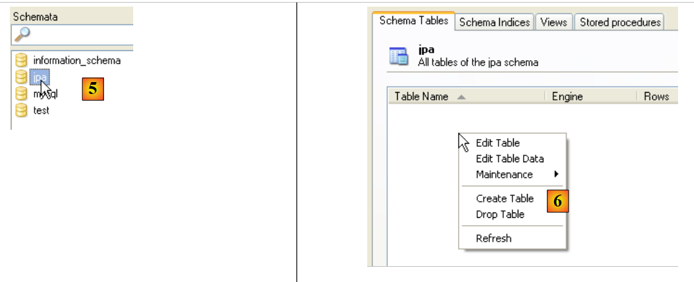 |
- en [5] : on sélectionne le schéma [jpa]
- en [6] : les objets du schéma [jpa] apparaissent, notamment les tables. Il n'y en a pas encore. Un clic droit permettrait d'en créer. Nous laissons le lecteur le faire.
Revenons à l'utilisateur [jpa] afin de lui donner tous les droits sur le schéma [jpa] :
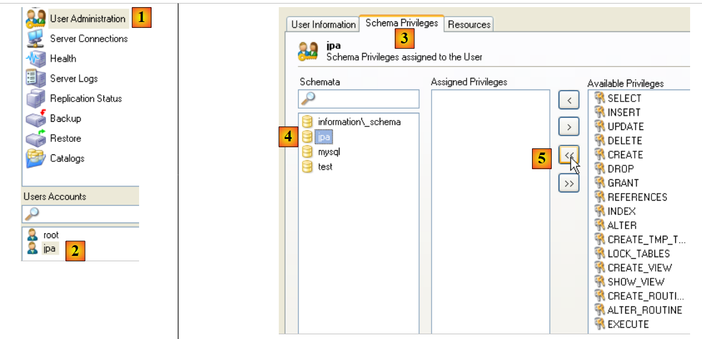 |
- en [1], puis [2] : on sélectionne l'utilisateur [jpa]
- en [3] : on sélectionne l'onglet [Schema Privileges]
- en [4] : on sélectionne le schéma [jpa]
- en [5] : on va donner à l'utilisateur [jpa] tous les privilèges sur le schéma [jpa]
 |
- en [6] : on valide les changements faits
Pour vérifier que l'utilisateur [jpa] peut travailler avec le schéma [jpa], on ferme l'administrateur MySQL. On le relance et on se connecte cette fois sous le nom [jpa/jpa] :
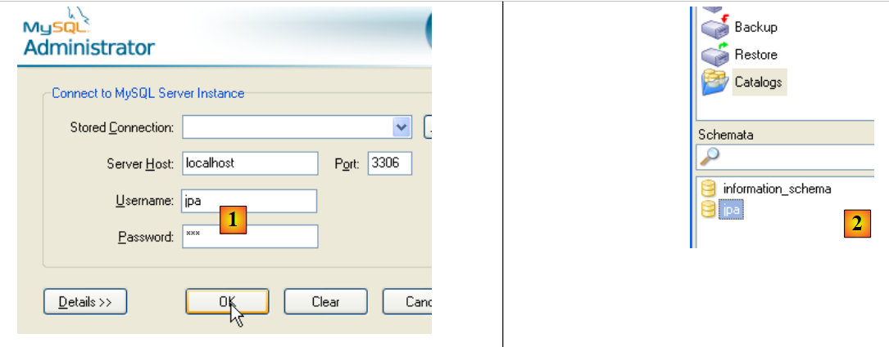 |
- en [1] : on s'identifie (jpa/jpa)
- en [2] : la connexion a réussi et dans [Schemata], on voit les schémas sur lesquels on a des droits. On voit le schéma [jpa].
Nous allons maintenant créer la même table [ARTICLES] qu'avec le SGBD Firebird en utilisant le script SQL [schema-articles.sql] généré au paragraphe 5.4.6.
 |
- en [1] : utiliser l'application [MySQL Query Browser]
- en [2], [3], [4] : s'identifier (jpa / jpa / jpa)
 |
- en [5] : ouvrir un script SQL afin de l'exécuter
- en [6] : désigner le script [schema-articles.sql] créé au paragraphe 5.4.6.
 |
- en [7] : le script chargé
- en [8] : on l'exécute
- en [9] : la table [ARTICLES] a été créée
5.5.5. Pilote JDBC de MySQL5
Le pilote JDBC de MySQL est téléchargeable au même endroit que le SGBD :
 |
 |
- en [1] : choisir le pilote JDBC qui convient
- en [2] : prendre la version windows qui convient
- en [3] : dans le zip récupéré, l'archive Java contenant le pilote JDBC est [mysql-connector-java-5.0.5-bin.jar]. On l'extraiera afin de l'utiliser dans les exemples du tutoriel JPA.
Nous le plaçons comme le précédent (paragraphe 5.4.7 dans le dossier <jdbc> :
 |
Pour tester ce pilote JDBC, nous allons utiliser Eclipse et le plugin SQL Explorer. Le lecteur est invité à suivre la démarche expliquée au paragraphe 5.4.7. Nous présentons quelques copies d'écran significatives :
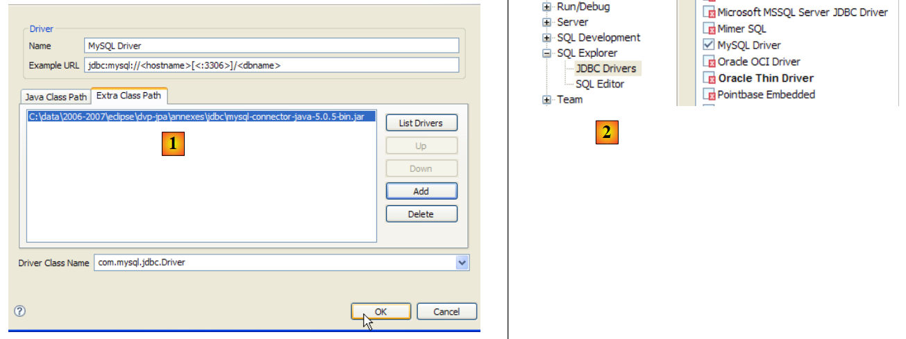 |
- en [1] : on a désigné l'archive du pilote JDBC de MySQL5
- en [2] : le pilote JDBC de MySQL5 est disponible
 |
- en [3] : définition de la connexion (user, password)=(jpa, jpa)
- en [4] : la connexion est active
- en [5] : la base connectée
5.6. Le SGBD PostgreSQL
5.6.1. Installation
Le SGBD PostgreSQL est disponible à l'url [http://www.postgresql.org/download/] :
 |
- en [1] : les site de téléchargement de PostgreSQL
- en [2] : choisir une version Windows
- en [3] : choisir une version avec installateur
 |
- en [4] : le contenu du fichier zip téléchargé. Double-cliquer sur le fichier [postgresql-8.2.msi]
- en [5] : la première page de l'assistant d'installation
 |
- en [6] : choisir une installation typique en acceptant les valeurs par défaut
- en [6b] : création du compte windows qui lancera le service PostgreSQL, ici le compte pgres avec le mot de passe pgres.
 |
- en [7] : laisser PostgreSQL créer le compte [pgres] si celui-ci n'existe pas déjà
- en [8] : définir le compte administrateur du SGBD, ici postgres avec le mot de passe postgres
 |
- en [9] et [10] : accepter les valeurs par défaut jusqu'à la fin de l'assistant. PostgreSQL va être installé.
L'installation de PostgreSQL donne naissance à un dossier dans [Démarrer / Programmes ] :

5.6.2. Lancer / Arrêter PostgreSQL
Le serveur PostgreSQL a été installé comme un service windows à démarrage automatique, c.a.d lancé dès le démarrage de windows. Ce mode de fonctionnement est peu pratique. Nous allons le changer :
[Démarrer / Panneau de configuration / Performances et maintenance / Outils d'administration / Services ] :
 |
- en [1] : nous double-cliquons sur [Services]
- en [2] : on voit qu'un service appelé [PostgreSQL] est présent, qu'il est démarré [3] et que son démarrage est automatique [4].
Pour modifier ce fonctionnement, nous double-cliquons sur le service [PostgreSQL] :
 |
- en [1] : on met le service en démarrage manuel
- en [2] : on l'arrête
- en [3] : on valide la nouvelle configuration du service
Pour lancer et arrêter manuellement le service PostgreSQL, on pourra utiliser les raccourcis du dossier [PostgreSQL] :
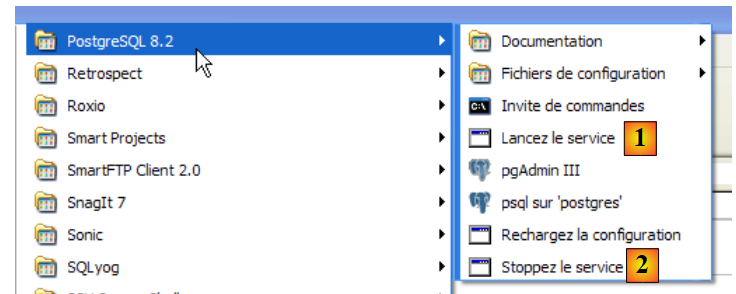 |
- en [1] : le raccourci pour lancer PostgreSQL
- en [2] : le raccourci pour l'arrêter
5.6.3. Administrer PostgreSQL
Sur la copie d'écran ci-dessus, l'application [pgAdmin III] (3) permet d'administrer le SGBD PostgreSQL. Lançons le SGBD, puis [pgAdmin III] via le menu ci-dessus :
 |
- en [1] : double-cliquer sur le serveur PostgreSQL pour s'y connecter
- en [2,3] : s'identifier comme administrateur du SGBD, ici (postgres / postgres)
 |
- en [4] : l'unique base existante
- en [5] : l'unique utilisateur existant
5.6.4. Création d'un utilisateur jpa et d'une base de données jpa
Le tutoriel utilise PostgreSQL avec une base de données appelée jpa et un utilisateur de même nom. Nous les créons maintenant. D'abord l'utilisateur :
 |
- en [1] : on crée un nouveau rôle (~utilisateur)
- en [2] : création de l'utilisateur jpa
- en [3] : son mot de passe est jpa
- en [4] : on répète le mot de passe
- en [5] : on autorise l'utiliateur à créer des bases de données
- en [6] : l'utilisateur [jpa] apparaît parmi les rôles de connexion
La base de données maintenant :
 |
- en [1] : on crée une nouvelle connexion au serveur
- en [2] : elle s'appellera jpa
- en [3] : machine à laquelle on veut se connecter
- en [4] : l'utilisateur qui se connecte
- en [5] : son mot de passe. On valide la configuration de la connexion par [OK]
- en [6] : la nouvelle connexion a été créée. Elle appartient à l'utilisateur jpa. Celui-ci va maintenant créer une nouvelle base de données :
 |
- n [1] : on ajoute une nouvelle base
- en [2] : son nom est jpa
- en [3] : son propriétaire est l'utilisateur jpa créé précédemment. On valide par [OK]
- en [4] : la base jpa a été créée. Un simple clic dessus nous connecte à elle et nous fait découvrir sa structure :
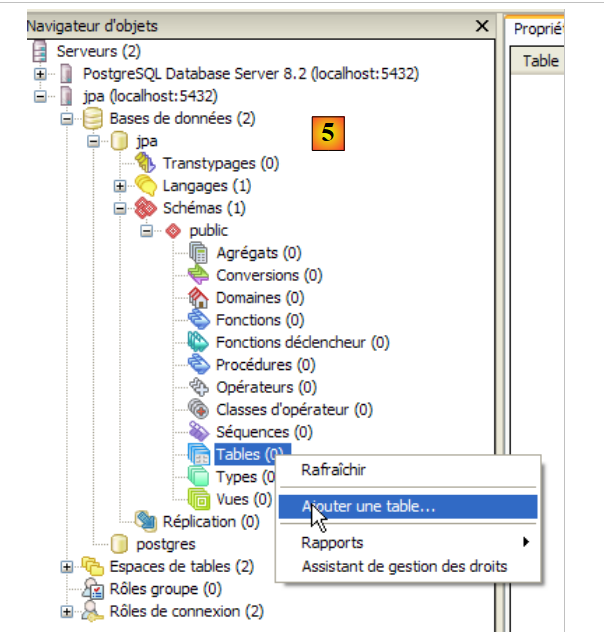 |
- en [5] : les objets du schéma [jpa] apparaissent, notamment les tables. Il n'y en a pas encore. Un clic droit permettrait d'en créer. Nous laissons le lecteur le faire.
Nous allons maintenant créer la même table [ARTICLES] qu'avec les SGBD précédents en utilisant le script SQL [schema-articles.sql] généré au paragraphe 5.4.6.
 |
- en [1] : ouvrir l'éditeur SQL
- en [2] : ouvrir un script SQL
- en [3]: désigner le script [schema-articles.sql] créé au paragraphe 5.4.6.
 |
- en [4] : le script chargé. On l'exécute.
- en [5] : la table [ARTICLES] a été créée.
- en [6, 7] : son contenu
5.6.5. Pilote JDBC de PostgreSQL
Le pilote JDBC de PostgreSQL est disponible dans le dossier [jdbc] du dossier d'installation de PostgreSQL :
 |
Nous le plaçons l'archive Jdbc comme les précédentes (paragraphe 5.4.7) dans le dossier <jdbc> :
 |
Pour tester ce pilote JDBC, nous allons utiliser Eclipse et le plugin SQL Explorer. Le lecteur est invité à suivre la démarche expliquée au paragraphe 5.4.7. Nous présentons quelques copies d'écran significatives :
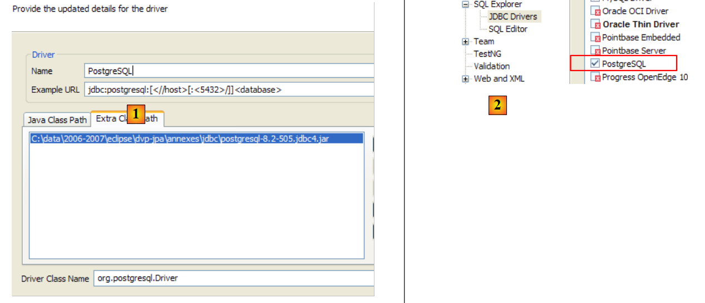 |
- en [1] : on a désigné l'archive du pilote JDBC de PostgreSQL
- en [2] : le pilote JDBC de PostgreSQL est disponible
 |
- en [3] : définition de la connexion (user, password)=(jpa, jpa)
- en [4] : la connexion est active
- en [5] : la base connectée
- en [6] : le contenu de la table [ARTICLES]
5.7. Le SGBD Oracle 10g Express
5.7.1. Installation
Le SGBD Oracle 10g Express est disponible à l'url [http://www.oracle.com/technology/software/products/database/xe/index.html] :
 |
- en [1] : le site de téléchargement d'Oracle 10g Express
- en [2] : choisir une version Windows. Une fois téléchargé le fichier, l'exécuter :
 |
- en [1] : double-cliquer sur le fichier [OracleXE.exe]
- en [2] : la première page de l'assistant d'installation
 |
- en [3] : accepter la licence
- en [4] : accepter les valeurs par défaut.
 |
- en [5,6] : l'utilisateur SYSTEM aura le mot de passe system.
- en [7] : on lance l'installation
L'installation de Oracle 10g Express donne naissance à un dossier dans [Démarrer / Programmes ] :

5.7.2. Lancer / Arrêter Oracle 10g
Comme pour les SGBD précédents, Oracle 10g a été installé comme un service windows à démarrage automatique. Nous changeons cette configuration :
[Démarrer / Panneau de configuration / Performances et maintenance / Outils d'administration / Services ] :
 |
- en [1] : nous double-cliquons sur [Services]
- en [2] : on voit qu'un service appelé [OracleServiceXE] est présent, qu'il est démarré [3] et que son démarrage est automatique [4].
- en [5] : un autre service d'Oracle, appelé " Listener " est également actif et à démarrage automatique.
Pour modifier ce fonctionnement, nous double-cliquons sur le service [OracleServiceXE] :
 |
- en [1] : on met le service en démarrage manuel
- en [2] : on l'arrête
- en [3] : on valide la nouvelle configuration du service
On procèdera de même avec le service [OracleXETNSListener] (cf [5] plus haut). Pour lancer et arrêter manuellement le service OracleServiceXE, on pourra utiliser les raccourcis du dossier [Oracle] :
 |
- en [1] : pour démarrer le SGBD
- en [2] : pour l'arrêter
- en [3] : pour l'administrer (ce qui le lance s'il ne l'est pas déjà)
5.7.3. Création d'un utilisateur jpa et d'une base de données jpa
Sur la copie d'écran ci-dessus, l'application [3] permet d'administrer le SGBD Oracle 10g Express. Lançons le SGBD [1], puis l'application d'administration [3] via le menu ci-dessus :
 |
- en [1] : s'identifier comme administrateur du SGBD, ici (system / system)
- en [2] : on crée un nouvel utilisateur
 |
- en [4] : nom de l'utilisateur
- en [5, 6] : son mot de passe, ici jpa
- en [7] : l'utilisateur jpa a été créé
Sous Oracle, un utilisateur est automatiquement associé à une base de données de même nom. La base de données jpa existe donc en même temps que l'utilisateur jpa.
5.7.4. Création de la table [ARTICLES] de la base de données jpa
OracleXE a été installé avec un client SQL travaillant en mode ligne. On peut travailler plus confortablement avec SQL Developer également fourni par Oracle. On le trouve sur le site :
[http://www.oracle.com/technology/products/database/sql_developer/index.html]
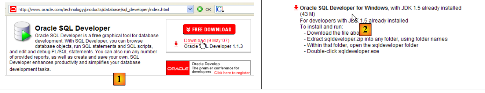 |
- en [1] : le site de téléchargement
- en [2] : prendre une version windows sans Jre si celui-ci est déjà installé (le cas ici), [SQL Developer] étant une application Java.
 |
- en [3] : décompresser le zip téléchargé
- en [4] : lancer l'exécutable [sqldeveloper.exe]
 |
- en [5] : au 1er lancement de [SQL Developer], indiquer le chemin du Jre installé sur la machine
- en [5b] : créer une nouvelle connexion
 |
- en [6] : SQL Developer permet de se connecter à divers SGBD. Choisir Oracle.
- en [7] : nom donné à la connexion qu'on est en train de créer
- en [8] : propriétaire de la connexion
- en [9] : son mot de passe (jpa)
- en [10] : garder les valeurs par défaut
- en [11] : pour tester la connexion (Oracle doit être lancé)
- en [12] : pour terminer la configuration de la connexion
- en [13] : les objets de la base jpa
- en [14] : on peut créer des tables. Comme dans les cas précédents, nous allons créer la table [ARTICLES] à partir du script créé au paragraphe 5.4.6.
 |
- en [15] : on ouvre un script SQL
- en [16] : on désigne le script SQL créé au paragraphe 5.4.6.
- en [17] : le script qui va être exécuté
 |
- en [18] : le résultat de l'exécution : la table [ARTICLES] a été créée. On double-clique dessus pour avoir accès à ses propriétés.
- en [19] : le contenu de la table.
5.7.5. Pilote JDBC de OracleXE
Le pilote JDBC de OracleXE est disponible dans le dossier [jdbc/lib] du dossier d'installation de OracleXE [1] :
 |
Nous le plaçons l'archive Jdbc [ojdbc14.jar] comme les précédentes (paragraphe 5.4.7) dans le dossier <jdbc> [2] :
Pour tester ce pilote JDBC, nous allons utiliser Eclipse et le plugin SQL Explorer. Le lecteur est invité à suivre la démarche expliquée au paragraphe 5.4.7. Nous présentons quelques copies d'écran significatives :
 |
- en [1] : on a désigné l'archive du pilote JDBC de OracleXE
- en [2] : le pilote JDBC de OracleXE est disponible
 |
- en [3] : définition de la connexion (user, password)=(jpa, jpa)
- en [4] : la connexion est active
- en [5] : la base connectée
- en [6] : le contenu de la table [ARTICLES]
5.8. Le SGBD SQL Server Express 2005
5.8.1. Installation
Le SGBD SQL Server Express 2005 est disponible à l'url [http://msdn.microsoft.com/vstudio/express/sql/download/] :
 |
- en [1] : d'abord télécharger et installer la plate-forme .NET 2.0
- en [2] : puis installer et télécharger SQL Server Express 2005
- en [3] : puis installer et télécharger SQL Server Management Studio Express qui permet d'administrer SQL Server
L'installation de SQL Server Express donne naissance à un dossier dans [Démarrer / Programmes ] :
 |
- en [1] : l'application de configuration de SQL Server. Permet également de lancer / arrêter le serveur
- en [2] : l'application d'administration du serveur
5.8.2. Lancer / Arrêter SQL Server
Comme pour les SGBD précédents, SQL server Express a été installé comme un service windows à démarrage automatique. Nous changeons cette configuration :
[Démarrer / Panneau de configuration / Performances et maintenance / Outils d'administration / Services ] :
 |
- en [1] : nous double-cliquons sur [Services]
- en [2] : on voit qu'un service appelé [SQL Server] est présent, qu'il est démarré [3] et que son démarrage est automatique [4].
- en [5] : un autre service lié à SQL Server, appelé "SQL Server Browser" est également actif et à démarrage automatique.
Pour modifier ce fonctionnement, nous double-cliquons sur le service [SQL Server] :
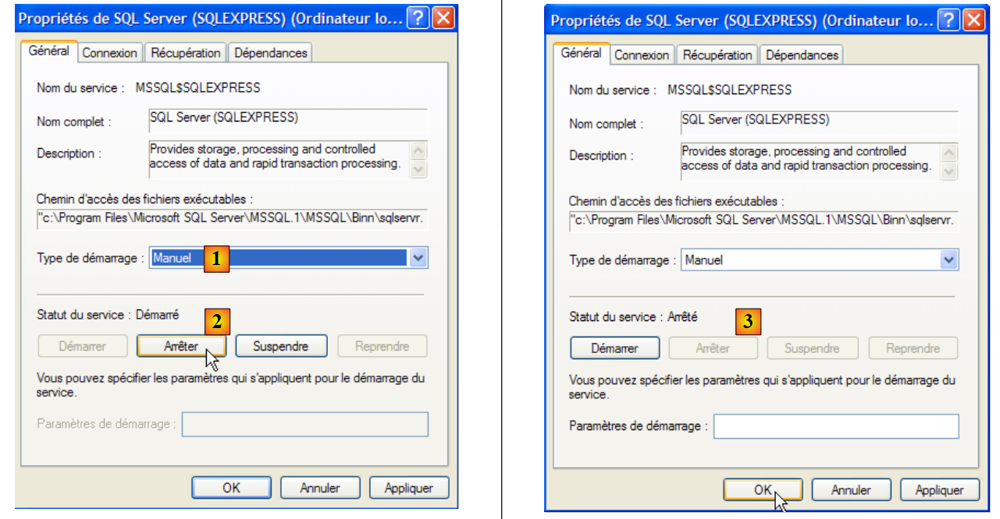 |
- en [1] : on met le service en démarrage manuel
- en [2] : on l'arrête
- en [3] : on valide la nouvelle configuration du service
On procèdera de même avec le service [SQL Server Browser] (cf [5] plus haut). Pour lancer et arrêter manuellement le service SQL server, on pourra utiliser l'application [1] du dossier [SQL server] :
 |
 |
- en [1] : s'assurer que le protocole TCP/IP est actif (enabled) puis passer aux propriétés du protocole.
- en [2] : dans l'onglet [IP Addresses], option [IPAll] :
- le champ [TCP Dynamic ports] est laissé vide
- le port d'écoute du serveur est fixé à 1433 dans [TCP Port]
 |
- en [3] : un clic droit sur le service [SQL Server] donne accès aux options de démarrage / arrêt du serveur. Ici, on le lance.
- en [4] : SQL Server est lancé
5.8.3. Création d'un utilisateur jpa et d'une base de données jpa
Lançons le SGBD comme indiqué ci-dessus, puis l'application d'administration [1] via le menu ci-dessous :
 |
 |
- en [1] : on se connecte à SQL Server en tant qu'administrateur Windows
- en [2] : on configure les propriétés de la connexion
 |
- en [3] : on autorise un mode mixte de connexion au serveur : soit avec un login windows (un utilisateur windows), soit avec un login SQL Server (compte défini au sein de SQL Server, indépendant de tout compte windows).
- en [3b] : on crée un utilisateur SQL Server
 |
- en [4] : option [General]
- en [5] : le login
- en [6] : le mot de passe (jpa ici)
- en [7] : option [Server Roles]
- en [8] : l'utilisateur jpa aura le droit de créer des bases de données
On valide cette configuration :
 |
- en [9] : l'utilisateur jpa a été créé
- en [10] : on se déconnecte
- en [11] : on se reconnecte
 |
- en [12] : on se connecte en tant qu'utilisateur jpa/jpa
- en [13] : une fois connecté, l'utilisateur jpa crée une base de données
 |
- en [14] : la base s'appellera jpa
- en [15] : et appartiendra à l'utilisateur jpa
- en [16] : la base jpa a été créée
5.8.4. Création de la table [ARTICLES] de la base de données jpa
Comme dans les exemples précédents, nous allons créer la table [ARTICLES] à partir du script créé au paragraphe 5.4.6.
 |
- en [1] : on ouvre un script SQL
- en [2] : on désigne le script SQL créé au paragraphe 5.4.6, page 240.
- en [3] : on doit s'identifier de nouveau (jpa/jpa)
- en [4] : le script qui va être exécuté
- en [5] : sélectionner la base dans laquelle le script va être exécuté
- en [6] : l'exécuter
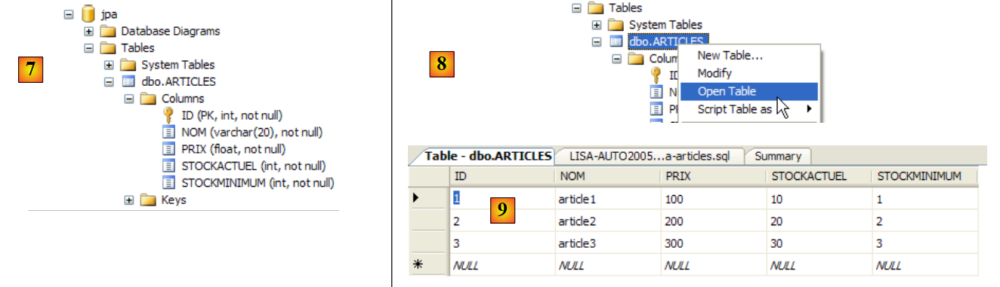 |
- en [7] : le résultat de l'exécution : la table [ARTICLES] a été créée.
- en [8] : on demande à voir son contenu
- en [9] : le contenu de la table.
5.8.5. Pilote JDBC de SQL Server Express
 |
- en [1] : une recherche sur Google avec le texte [Microsoft SQL Server 2005 JDBC Driver] nous amène à la page de téléchargement du pilote JDBC. Nous sélectionnons la version la version la plus récente
- en [2] : le fichier téléchargé. On double-clique dessus. Une décompression a lieu et donne naissance à un dossier dans lequel on trouve le pilote Jdbc [3]
- en [4] : nous plaçons l'archive Jdbc [sqljdbc.jar] comme les précédentes (paragraphe 5.4.7) dans le dossier <jdbc>
Pour tester ce pilote JDBC, nous allons utiliser Eclipse et le plugin SQL Explorer. Le lecteur est invité à suivre la démarche expliquée au paragraphe 5.4.7. Nous présentons quelques copies d'écran significatives :
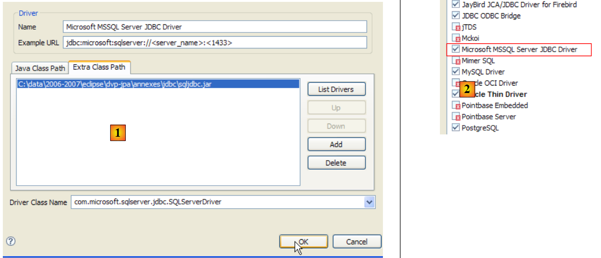 |
- en [1] : on a désigné l'archive du pilote JDBC de SQL Server
- en [2] : le pilote JDBC de SQL Server est disponible
 |
- en [3] : définition de la connexion (user, password)=(jpa, jpa)
- en [4] : la connexion est active
- en [5] : la base connectée
- en [6] : le contenu de la table [ARTICLES]
5.9. Le SGBD HSQLDB
5.9.1. Installation
Le SGBD HSQLDB est disponible à l'url [http://sourceforge.net/projects/hsqldb]. C'est un SGBD écrit en Java, très léger en mémoire, qui gère des bases de données en mémoire et non sur disque. Le résultat en est une très grande rapidité d'exécution des requêtes. C'est son principal intérêt. Les bases de données ainsi créées en mémoire peuvent être retrouvées lorsque le serveur est arrêté puis relancé. En effet, les ordres SQL émis pour créer les bases sont mémorisés dans un fichier de logs pour être rejoués au démarrage suivant du serveur. On a ainsi une persistance des bases dans le temps.
La méthode a ses limites et HSQLDB n'est pas un SGBD à vocation commerciale. Son principal intérêt réside dans les tests ou les applications de démonstration. Par exemple, le fait que HSQLDB soit écrit en Java permet de l'inclure dans des tâches Ant (Another Neat Tool) un outil Java d'automatisation de tâches. Ainsi des tests journaliers de codes en cours de développement, automatisés par Ant, vont pouvoir intégrer des tests de bases de données gérées par le SGBD HSQLDB. Le serveur sera lancé, arrêté, géré par des tâches Java.
 |
- en [1] : le site de téléchargement
- en [2] : prendre la version la plus récente
 |
- en [3] : décompresser le fichier zip téléchargé
- en [4] : le dossier [hsqldb] issu de la décompression
- en [5] : le dossier [demo] qui contient le script permettant de lancer le serveur [hsql] [6] et en [7], celui permettant de lancer un outil rustique d'administration du serveur.
5.9.2. Lancer / Arrêter HSQLDB
Pour lancer le serveur HSQLDB on double-clique sur l'application [runManager.bat] [6] ci-dessus :
 |
- en [1] : on voit que pour arrêter le serveur, il suffira de faire Ctrl-C dans la fenêtre.
5.9.3. La base de données [test]
La base de données gérée par défaut se trouve dans le dossier [data] :
 |
- en [1] : au démarrage, le SGBD HSQL exécute le script appelé [test.script]
- ligne 1 : un schéma [public] est créé
- ligne 2 : un utilisateur [sa] avec un mot de passe vide est créé
- ligne 3 : l'utilisateur [sa] reçoit les droits d'administration
Au final, un utilisateur ayant des droits d'administration a été créé. C'est cet utilisateur que nous utiliserons par la suite.
5.9.4. Pilote JDBC de HSQL
Le pilote Jdbc du SGBD HSQL se trouve dans le dossier [lib] :
 |
- en [1] : l'archive [hsqldb.jar] contient le pilote Jdbc du SGBD HSQL
- en [2] : nous plaçons cette archive comme les précédentes (paragraphe 5.4.7) dans le dossier <jdbc>
Pour vérifier ce pilote JDBC, nous allons utiliser Eclipse et le plugin SQL Explorer. Le lecteur est invité à suivre la démarche expliquée au paragraphe 5.4.7. Nous présentons quelques copies d'écran significatives :
 |
- en [1] : [window / preferences / SQL Explorer / JDBC Drivers]
- en [2] : on configure le server [HSQLDB]
- en [3] : on désigne l'archive [hsqldb.jar] contenant le pilote Jdbc
- en [4] : le nom de la classe Java du pilote Jdbc
- en [5] : le pilote Jdbc est configuré
Ceci fait, on se connecte au serveur HSQL. On lance celui-ci auparavant.
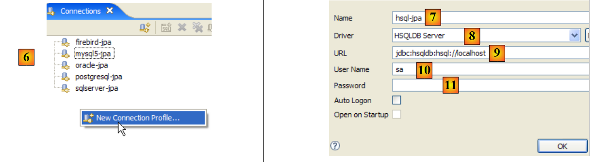 |
- en [6] : on crée une nouvelle connexion
- en [7] : on lui donne un nom
- en [8] : on veut se connecter au serveur HSQLDB
- en [9] : l'url de la base de données à laquelle on veut se connecter. Ce sera la base [test] vue précédemment.
- en [10] : on se connecte en tant qu'utilisateur [sa]. On a vu qu'il était administrateur du SGBD.
- en [11] : l'utilisateur [sa] n'a pas de mot de passe.
On valide la configuration de la connexion.
 |
- en [12] : on se connecte
- en [13] : on s'identifie
- en [14] : on est connecté
 |
- en [15] : le schéma [PUBLIC] n'a pas encore de table
- en [16] : on va créer la table [ARTICLES] à partir du script [schema-articles.sql] créé au paragraphe 5.4.6.
- en [17] : on sélectionne le script
 |
- en [18] : le script à exécuter
- en [19] : on l'exécute après l'avoir débarrassé de tous ses commentaires car HSQLB n'accepte pas.
 |
- une fois l'exécution du script faite, on rafraîchit en [20] l'affichage de la base
- en [21] : la table [ARTICLES] est bien là
- en [22] : son contenu
Arrêtons, puis relançons le serveur HSQLDB. Ceci fait, examinons le fichier [test.script] :
On voit que le SGBD a mémorisé les différents ordres SQL joués lors de la précédente session et qu'il les rejoue au démarrage de la nouvelle session. On voit par ailleurs (ligne 2) que la table [ARTICLES] est créée en mémoire (MEMORY). A chaque session, les ordres SQL émis sont mémorisés dans [test.log] pour être recopiés en début de session suivante dans [test.script] et rejoués en début de session.
5.10. Le SGBD Apache Derby
5.10.1. Installation
Le SGBD Apache Derby est disponible à l'url [http://db.apache.org/derby/]. C'est un SGBD écrit lui aussi en Java et également très léger en mémoire. Il présente des avantages analogues à HSQLDB. Lui aussi peut être embarqué dans des applications Java, c.a.d. être partie intégrante de l'application et fonctionner dans la même JVM.
 |
- en [1] : le site de téléchargement
- en [2,3] : prendre la version la plus récente
 |
- en [3] : décompresser le fichier zip téléchargé
- en [4] : le dossier [db-derby-*-bin] issu de la décompression
- en [5] : le dossier [bin] qui contient le script permettant de lancer le serveur [db derby] [6] et en [7], celui de l'arrêter.
5.10.2. Lancer / Arrêter Apache Derby (Db Derby)
Pour lancer le serveur Db Derby on double-clique sur l'application [startNetworkServer] [6] ci-dessus :
 |
- en [1] : le serveur est démarré. On l'arrêtera avec l'application [stopNetworkServer] [7] ci-dessus.
5.10.3. Pilote JDBC de Db Derby
Le pilote Jdbc du SGBD Db Derby se trouve dans le dossier [lib] du dossier d'installation :
 |
- en [1] : l'archive [derbyclient.jar] contient le pilote Jdbc du SGBD Db Derby
- en [2] : nous plaçons cette archive comme les précédentes (paragraphe 5.4.7) dans le dossier <jdbc>
Pour tester ce pilote JDBC, nous allons utiliser Eclipse et le plugin SQL Explorer. Le lecteur est invité à suivre la démarche expliquée au paragraphe 5.4.7. Nous présentons quelques copies d'écran significatives :
 |
- en [1] : [window / preferences / SQL Explorer / JDBC Drivers]
- en [2] : le pilote Jdbc d'Apache Derby n'est pas dans la liste. On l'ajoute.
 |
- en [3] : on donne un nom au nouveau pilote
- en [4] : on précise la forme des Url gérées par le pilote Jdbc
- en [5] : on a désigné l'archive .jar du pilote Jdbc
- en [5b] : le nom de la classe Java du pilote Jdbc
- en [5c] : le pilote Jdbc est configuré
Ceci fait, on se connecte au serveur Apache Derby. On lance celui-ci auparavant.
 |
- en [6] : on crée une nouvelle connexion
- en [7] : on lui donne un nom
- en [8] : on veut se connecter au serveur Apache Derby
- en [9] : l'url de la base de données à laquelle on veut se connecter. Derrière le début standard [jdbc:derby://localhost:1527], on mettra le chemin d'un dossier du disque contenant une base de données Derby. L'option [create=true] permet de créer ce dossier s'il n'existe pas encore.
- en [10,11] : on se connecte en tant qu'utilisateur [jpa/jpa]. Je n'ai pas creusé la question mais il semble qu'on puisse mettre ce qu'on veut comme login / mot de passe. On déclare ici le propriétaire de la base, si create=true.
On valide la configuration de la connexion.
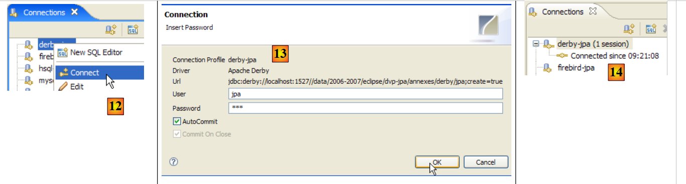 |
- en [12] : on se connecte
- en [13] : on s'identifie (jpa/jpa)
- en [14] : on est connecté
 |
- en [15] : le schéma [jpa] n'apparaît pas encore.
- en [16] : on va créer la table [ARTICLES] à partir du script [schema-articles.sql] créé au paragraphe 5.4.6.
- en [17] : on sélectionne le script
 |
- en [18] : le script à exécuter
- en [19] : on l'exécute après l'avoir débarrassé de tous ses commentaires car Apache Derby comme HSQLB ne les accepte pas.
 |
- une fois l'exécution du script faite, on rafraîchit en [20] l'affichage de la base
- en [21] : le schéma [jpa] et la table [ARTICLES] sont bien là
- en [22] : le contenu de la table [ARTICLES]
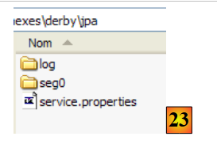 |
- en [23] : le contenu du dossier [derby\jpa] dans lequel a été créée la base de données.
5.11. Le framework Spring 2
Le framework Spring 2 est disponible à l'url [http://www.springframework.org/download] :
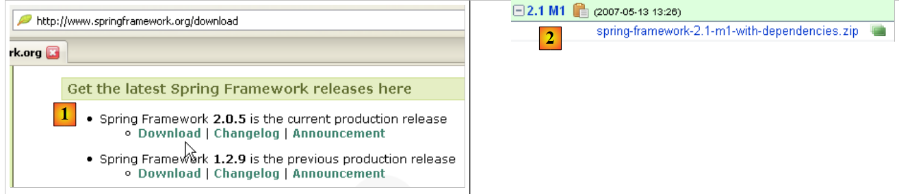 |
- en [1] : on télécharge la dernière version
- en [2] : on télécharge la version dite "avec dépendances" car elle contient les archives .jar des outils tierces que Spring intègre et dont on a tout le temps besoin.
 |
- en [3] : on décompresse l'archive téléchargée
- en [4] : le dossier d'installation de Spring 2.1
 |
- en [5] : dans le dossier <dist>, on trouve les archives de Spring. L'archive [spring.jar] réunit toutes les classes du framework Spring. Celles-ci sont également disponibles par modules dans le dossier <modules> en [6]. Si l'on connaît les modules dont on a besoin, on peut les trouver ici. On évite ainsi d'inclure dans l'application des archives dont elle n'a pas besoin.
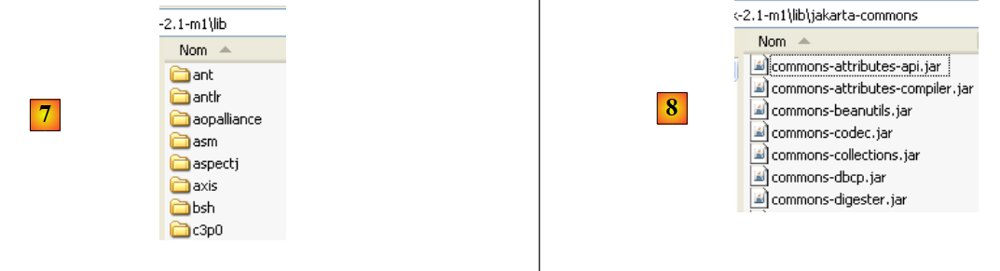 |
- en [7] : le dossier <lib> contient les archives des outils tiers utilisés par Spring
- en [8] : quelques archives du projet [jakarta-commons]
Lorsque le tutoriel utilise des archives de Spring, il faut aller les chercher soit dans le dossier <dist>, soit dans le dossier <lib> du dossier d'installation de Spring.
5.12. Le conteneur EJB3 de JBoss
Le conteneur EJB3 de JBoss est disponible à l'url [http://labs.jboss.com/jbossejb3/downloads/embeddableEJB3] :
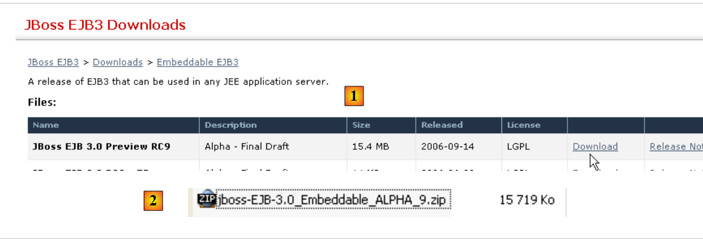 |
- en [1] : on télécharge JBoss EJB3. On peut remarquer la date du produit (septembre 2006), alors qu'on télécharge en mai 2007. On peut se demander si ce produit évolue encore.
- en [2] : le fichier téléchargé
 |
- en [3] : le fichier zip décompressé
- en [4] : les archives [hibernate-all.jar, jboss-ejb3-all.jar, thirdparty-all.jar] forment le conteneur EJB3 de JBoss. Il faut les mettre dans le classpath de l'application utilisant ce conteneur.